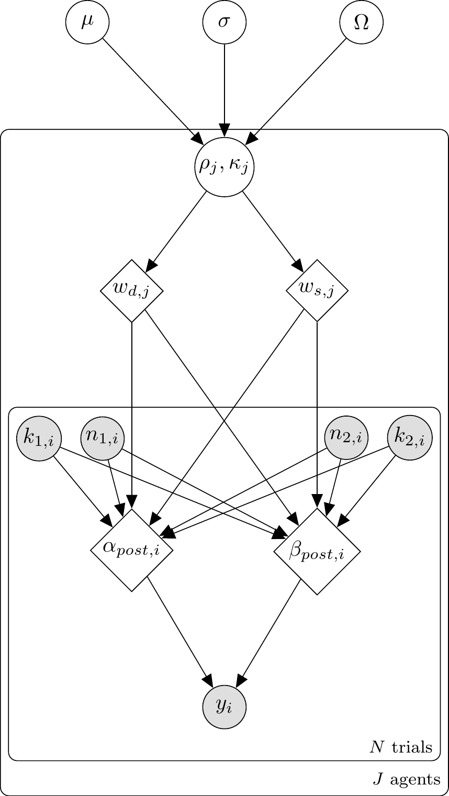

📍 Where we are in the Bayesian modeling workflow: Chs. 1–8 used the Bayesian statistical framework as a tool to model cognitive processes in the matching-pennies task. This chapter introduces a distinct scientific claim: the Bayesian cognition hypothesis — the proposal that the mind itself operates according to Bayes’ theorem. We use our Bayesian statistical tools to test whether this hypothesis fits human behaviour in a social learning task, applying the full validation battery from Chs. 5–7. The chapter also introduces Leave-Future-Out cross-validation for sequential models, a technique flagged in Ch. 8 but not developed there.
10.1 Bayesian statistics vs. Bayesian Cognition
This entire course has used Bayesian statistics as its inferential framework: we represent uncertainty as probability distributions, write likelihoods, specify priors, and obtain posteriors via Stan. That is our tool to estimate any kind of model.
This chapter introduces a distinct scientific claim: the Bayesian cognition hypothesis. This is the proposal that the mind itself operates according to principles analogous to Bayes’ theorem — that people represent beliefs as probability distributions, update them optimally when new evidence arrives, and combine information sources in proportion to their reliability. Whether this hypothesis is empirically correct is an open and contested question. We will use our Bayesian statistical tools to derive from the theory models to analyse some experimental data.
N.B. Bayes as a tool and Bayes as a model are very different ways of using Bayes. Indeed, we have fitted non-Bayesian models using Bayesian techniques, and there are many papers out there testing Bayesian models of cognition using frequentist techniques.
10.2 Introduction
The human mind constantly receives input from multiple sources: direct sensory evidence, social information from others, and prior knowledge built from experience (perhaps even from innate structures). A fundamental question in cognitive science is how these disparate pieces of information are combined to produce coherent beliefs about the world.
The Bayesian framework offers a powerful approach to formalizing this process. Under this framework, the mind is conceptualized as a probabilistic machine that continuously updates its beliefs based on new evidence. This contrasts with rule-based or purely associative models of cognition by emphasizing:
Representations of uncertainty: Beliefs are represented as probability distributions, not single values.
Optimal integration: Information is combined according to its reliability.
Prior knowledge: New evidence is interpreted in light of existing beliefs.
where \(P(\text{belief} \mid \text{evidence})\) is the posterior, \(P(\text{evidence} \mid \text{belief})\) is the likelihood, and \(P(\text{belief})\) is the prior. The \(\propto\) symbol denotes proportionality — the product on the right should in principle be normalised by dividing by \(P(\text{evidence})\) to recover a proper probability. We often ignore this normalization constant, sometimes because it cancels out, sometimes because our sampling methods can approximate it away, sometimes because it doesn’t rely on belief.
10.3 Learning Objectives
After completing this chapter, you will be able to:
Understand the basic principles of Bayesian information integration and distinguish the Bayesian cognition hypothesis from the Bayesian statistics toolkit.
Implement cognitive models — starting with a Simple Bayesian Agent (SBA) and a Weighted Bayesian Agent (WBA), discover their limitations, and then develop reparameterised solutions including a Proportional Bayesian Agent (PBA).
Recognize that the observation model (how beliefs become actions) is a separate modelling dimension from the belief-update model (how evidence is integrated).
Execute the full Bayesian workflow (prior predictive checks → fitting → diagnostics → parameter recovery → SBC → model comparison) on cognitive models.
Identify when models have identifiability issues and how reparameterisation can solve them.
10.4 The Bayesian Framework for Cognition
Bayesian models of cognition explore the idea that the mind operates according to principles similar to Bayes’ theorem, combining different sources of evidence to form updated beliefs. Most commonly this is framed in terms of prior beliefs being updated with new evidence to form a posterior.
10.4.1 Visualising Bayesian Updating
x <-seq(0, 1, by =0.01)prior <-dbeta(x, 3, 3)likelihood <-dbeta(x, 7, 3)posterior <-dbeta(x, 10, 6)# 1. Define the length explicitly outside the tibblen_x <-length(x) plot_data <-tibble(x =rep(x, 3),density =c(prior, likelihood, posterior),distribution =factor(# 2. Use the explicit length variable hererep(c("Prior", "Likelihood", "Posterior"), each = n_x), levels =c("Prior", "Likelihood", "Posterior") ))ggplot(plot_data, aes(x = x, y = density,colour = distribution, linetype = distribution)) +geom_line(linewidth =1.2) +scale_colour_manual(values =c("Prior"="#4575b4", "Likelihood"="#d73027","Posterior"="#756bb1") ) +scale_linetype_manual(values =c("Prior"="dashed", "Likelihood"="dotted","Posterior"="solid") ) +labs(title ="Bayesian Updating: Prior × Likelihood ∝ Posterior",subtitle ="Uniform prior updated with 7 blue / 2 red marbles",x ="Belief (proportion blue)",y ="Probability density",colour =NULL, linetype =NULL ) +theme(legend.position ="bottom")
The posterior is narrower than either source alone — combining information increases certainty. Its peak lies between prior and likelihood, but closer to the likelihood because the evidence was relatively strong. It is also more confident than the likelihood, as it combines compatible evidence from prior and likelihood. Bayesian integration is not averaging; it is precision-weighted combination (as we also discussed in chapter 3.7).
10.4.2 Bayesian Models in Cognitive Science
Bayesian cognitive models have been successfully applied to:
Perception: combining multi-sensory cues (visual, auditory, tactile) into a unified percept.
Learning: updating beliefs from observation and instruction.
Decision-making: weighing different evidence sources when making choices.
Social cognition: integrating others’ opinions with one’s own knowledge.
Psychopathology: understanding schizophrenia and autism in terms of atypical Bayesian inference — hyper-precise priors, reduced likelihood weighting, or atypical weighting of social information.
10.5 The Setup: Social Influence in Perceptual Decision-Making
To make our discussion of bayesian models concrete, let us consider a simplified version of a study examining how people integrate information from different sources (Simonsen et al., 2021).
In the marble task:
There is a set of urns with varying proportions of blue and red marbles
At each trial the urn changes (no learning is possible across trials)
At each trial you sample \(n_1 = 8\) marbles → Source 1 (Direct Evidence)
At each trial another participant samples (hidden to you) and communicates their guess as to the next ball, including their confidence → Source 2 (Social Evidence)
Source 1 ranges from 0 to 8 blue marbles
Source 2 is encoded as 0–3 (Clear Red, Maybe Red, Maybe Blue, Clear Blue)
The experiment is built so you get all combinations of Source 1 and Source 2, with 5 repetitions each
This encoding introduces a strict measurement model assumption. The other person actually drew 8 marbles, but we are compressing their choice-plus-confidence signal into a smaller equivalent sample size (\(n_2 = 3\)). Remember, other choices would be possible, and perhaps better than this, but this is very convenient as it sets both sources on the same scale.
10.5.1 The Beta Distribution Intuition
The Beta distribution provides an elegant way to represent beliefs about proportions such as the proportion of blue marbles in a jar. Its two parameters \(\alpha\) and \(\beta\) have an intuitive interpretation:
\(\alpha\) can be thought of as the number of blue marbles observed (plus the prior pseudo-count \(\alpha_0\)).
\(\beta\) can be thought of as the number of red marbles observed (plus the prior pseudo-count \(\beta_0\)).
What should we put as prior? We previously chose a uniform distribution on the 0-1 scale, which corresponds to \(\text{Beta}(1, 1)\). Another common choice is the Jeffreys prior: \(\text{Beta}(0.5, 0.5)\). The Jeffreys prior is defined as parameterisation-invariant: it assigns equal information to each value of \(\theta\)on the log-odds scale, which is the natural scale for a Bernoulli likelihood.
As usual, it’s easier to understand our choices if we plot the priors and their consequences.
theta_grid <-seq(0.001, 0.999, length.out =500)n_grid <-length(theta_grid)prior_comparison <-tibble(theta =rep(theta_grid, 3),density =c(dbeta(theta_grid, 0.5, 0.5),dbeta(theta_grid, 1, 1),dbeta(theta_grid, 2, 2) ),prior =factor(rep(c("Jeffreys: Beta(0.5, 0.5)","Uniform: Beta(1, 1)","Weakly informative: Beta(2, 2)"), each = n_grid),levels =c("Jeffreys: Beta(0.5, 0.5)","Uniform: Beta(1, 1)","Weakly informative: Beta(2, 2)") ))p_priors <-ggplot(prior_comparison, aes(x = theta, y = density,colour = prior, linetype = prior)) +geom_line(linewidth =1.2) +scale_colour_manual(values =c("#d73027", "#4575b4", "#756bb1")) +scale_linetype_manual(values =c("solid", "dashed", "dotted")) +labs(title ="Three Prior Choices for a Binomial Proportion",subtitle ="Jeffreys concentrates mass near 0 and 1;\nUniform is flat; Beta(2,2) pulls toward 0.5",x =expression(theta ~"(proportion blue)"),y ="Prior density",colour =NULL, linetype =NULL ) +theme(legend.position ="bottom")# --- Same priors viewed on the log-odds scale ---# Transform: if theta ~ Beta(a, b), what does logit(theta) look like?# We use a change-of-variables: density on logit scale =# dbeta(inv_logit(x), a, b) * inv_logit(x) * (1 - inv_logit(x))logit_grid <-seq(-6, 6, length.out =500)inv_logit <-plogis(logit_grid)jacobian <- inv_logit * (1- inv_logit)logit_comparison <-tibble(logit_theta =rep(logit_grid, 3),density =c(dbeta(inv_logit, 0.5, 0.5) * jacobian,dbeta(inv_logit, 1, 1) * jacobian,dbeta(inv_logit, 2, 2) * jacobian ),prior =factor(rep(c("Jeffreys: Beta(0.5, 0.5)","Uniform: Beta(1, 1)","Weakly informative: Beta(2, 2)"), each =length(logit_grid)),levels =c("Jeffreys: Beta(0.5, 0.5)","Uniform: Beta(1, 1)","Weakly informative: Beta(2, 2)") ))p_logit <-ggplot(logit_comparison, aes(x = logit_theta, y = density,colour = prior, linetype = prior)) +geom_line(linewidth =1.2) +scale_colour_manual(values =c("#d73027", "#4575b4", "#756bb1")) +scale_linetype_manual(values =c("solid", "dashed", "dotted")) +labs(title ="The Same Priors on the Log-Odds Scale",subtitle ="Jeffreys is nearly flat — it assigns equal information per unit log-odds.\nUniform concentrates mass near logit(θ) = 0 (i.e., θ = 0.5).",x =expression("logit("* theta *")"),y ="Density (change of variables)",colour =NULL, linetype =NULL ) +theme(legend.position ="bottom")# --- Posterior comparison after 6 blue, 2 red ---blue_obs <-6; red_obs <-2posterior_comparison <-tibble(theta =rep(theta_grid, 3),density =c(dbeta(theta_grid, 0.5+ blue_obs, 0.5+ red_obs),dbeta(theta_grid, 1+ blue_obs, 1+ red_obs),dbeta(theta_grid, 2+ blue_obs, 2+ red_obs) ),prior_used =factor(rep(c("Jeffreys → Beta(6.5, 2.5)","Uniform → Beta(7, 3)","Beta(2,2) → Beta(8, 4)"), each = n_grid) ))p_post <-ggplot(posterior_comparison, aes(x = theta, y = density,colour = prior_used)) +geom_line(linewidth =1.2) +geom_vline(xintercept =6.5/9, linetype ="dashed",colour ="#d73027", alpha =0.6) +geom_vline(xintercept =7/10, linetype ="dashed",colour ="#4575b4", alpha =0.6) +geom_vline(xintercept =8/12, linetype ="dashed",colour ="#756bb1", alpha =0.6) +scale_colour_manual(values =c("#d73027", "#4575b4", "#756bb1")) +annotate("text", x =0.15, y =max(posterior_comparison$density) *0.85,label =sprintf("Max Δ mean = %.3f", 8/12-6.5/9),size =3.5, colour ="grey30") +labs(title ="Posteriors After 6 Blue, 2 Red: The Practical Difference",subtitle ="With 8 observations the prior choice barely matters (max Δ ≈ 0.06)",x =expression(theta),y ="Posterior density",colour =NULL ) +theme(legend.position ="bottom")# Compose all three panelsp_priors
p_logit
p_post
The three panels above tell a clear story. On the probability scale (top), the Jeffreys prior looks extreme — it concentrates mass near 0 and 1, as if expecting jars to be mostly one colour. The uniform prior looks neutral. But as usual, this is a matter of scale: on the log-odds scale, where the Bernoulli likelihood naturally lives, Jeffreys is the one that is approximately flat. The uniform prior, seemingly innocuous, quietly concentrates mass near logit(θ)=0 — encoding a more pronounced preference for balanced jars than the Jeffreys prior. The Beta(2,2) prior goes further, explicitly pulling toward \(θ = 0.5\).
I generally prefer to think in probability (0-1) scale, but others prefer the log-odds scale. As usual, it’s a good idea to investigate the consequences of this choice. The bottom panel shows that the consequences are not drastic. After observing just 6 blue and 2 red marbles, the three posteriors are nearly indistinguishable: the Jeffreys prior gives Beta(6.5,2.5) with mean ≈ 0.72, the uniform gives Beta(7,3) with mean = 0.70, and the Beta(2,2) prior gives Beta(8,4) with mean ≈ 0.67. The maximum shift across all three is ≈0.06 — the data have overwhelmed the prior after a single sample of n = 8 marbles. Just to challenge myself to choices I am not used to, we use the Jeffreys prior throughout this chapter.
10.5.2 Setting Up the Experimental Design
# Create the full factorial designevidence_combinations <-expand_grid(blue1 =0:8, # Direct evidence: 0-8 blue marbles out of 8blue2 =0:3, # Social evidence: encoded as 0-3 (pseudo-marbles)total1 =8, # Fixed sample size for direct evidencetotal2 =3# Fixed "sample size" for social evidence)# This gives us 9 × 4 = 36 unique evidence combinationscat("Unique evidence combinations:", nrow(evidence_combinations), "\n")
Unique evidence combinations: 36
cat("With 5 repetitions each:", nrow(evidence_combinations) *5, "trials per agent\n")
With 5 repetitions each: 180 trials per agent
10.6 The Beta-Binomial Likelihood
How do we model evidence when it arrives as counts — k blue marbles out of n total observed? The Beta distribution provides a natural representation of beliefs about a proportion, and combined with a Bernoulli choice it gives us the Beta-Binomial likelihood that both agents in this chapter will use.
The two parameters \(\alpha\) and \(\beta\) have an intuitive interpretation as pseudo-counts:
\(\alpha\) = prior pseudo-count + (weighted) blue marbles from all sources
\(\beta\) = prior pseudo-count + (weighted) red marbles from all sources
Using the Jeffreys prior (\(\alpha_0 = \beta_0 = 0.5\)), the posterior parameters after observing direct evidence \((k_1, n_1)\) and social evidence \((k_2, n_2)\) with weights \(w_d, w_s\) are:
Setting \(w_d = w_s = 1\) recovers strict Bayesian updating (Simple Bayesian Agent, SBA); letting them vary will give us the Weighted Bayesian Agent (WBA). We’ll meet both formally in the next section. For now we focus on the likelihood itself.
10.6.1 The Observation Model: A Separate Modelling Dimension
The Bayesian agents as we have implemented them specify how they integrate evidence — but they also embed a specific assumption about how beliefs become actions. Indeed, the BetaBinomial(\(1, \alpha, \beta\)) observation model entails a two-step stochastic process: first sample a belief \(\theta \sim \text{Beta}(\alpha, \beta)\), then sample a choice \(y \sim \text{Bernoulli}(\theta)\). This is probability matching — the agent’s action is a random sample from its full posterior distribution (rather than from the averate \(\theta\)) over the jar’s composition.
I like this way of doing things, because all the uncertainty is preserved and transmitted across all phases of the model. However, this is in principle a testable cognitive hypothesis. A different agent might act more deterministically, choosing blue whenever \(\text{E}[\theta] > 0.5\), or following a graded rule where higher confidence makes the choice more certain. We can formalise these alternatives:
Observation model
Cognitive claim
Distribution
BetaBinomial (\(n=1\))
Probability matching: action sampled from belief
\(y \sim \text{BetaBin}(1, \alpha, \beta)\)
Softmax
Graded determinism: posterior mean compressed by inverse temperature \(\phi\)
The BetaBinomial propagates the agent’s full uncertainty about the jar into the response: an agent who is genuinely uncertain about \(\theta\) produces more variable responses than one who is confident. This excess variability (overdispersion relative to a plain Binomial) is not noise added on top of the model — it is the model’s cognitive claim. The softmax model, by contrast, collapses the posterior to its mean \(\hat{\theta} = \alpha / (\alpha + \beta)\) and then applies a noise parameter. It discards distributional information (but it’s an empirical question whether humans would do the same).
10.6.2 How the BetaBinomial Generates a Distribution of Choices
The BetaBinomial likelihood is not a deterministic threshold rule. It describes a two-step stochastic process:
Draw a belief: Sample the true proportion \(\theta \sim \text{Beta}(\alpha, \beta)\), representing genuine uncertainty about the jar’s composition.
Draw a choice: Given that \(\theta\), sample a binary choice \(y \sim \text{Bernoulli}(\theta)\).
The consequence is that even when the posterior mean is 0.70 in favour of blue, the agent will not choose blue exactly 70% of the time in a perfectly mechanical way. There is variability from two sources simultaneously: uncertainty about what the jar proportion actually is (step 1), and the irreducible randomness of acting on that belief with a single guess (step 2). This variability is not noise added on top of the model — it is the model. The Beta distribution encodes what a rational agent should believe; the Bernoulli draw captures the randomness of a single decision.
This two-stage structure has a measurable implication: the BetaBinomial has greater variance than a Binomial with the same mean. This excess variance is called overdispersion, and it arises precisely because \(\theta\) must itself be sampled from the Beta rather than being known.
# Scenario: 4 blue of 8 direct + 2 blue of 3 social (Jeffreys prior)alpha_demo <-0.5+4+2# = 6.5beta_demo <-0.5+4+1# = 5.5n_sims <-10000# To see overdispersion, we must simulate MULTIPLE choices per agent.# Let's assume each simulated agent makes 20 choices.n_choices <-20expected_rate_demo <- alpha_demo / (alpha_demo + beta_demo)# ---------------------------------------------------------# Step 1: Simulate Both Models# ---------------------------------------------------------# Model A: Beta-Binomial (Uncertainty propagates)# Draw theta from Beta, then draw successes based on that thetatheta_draws <-rbeta(n_sims, alpha_demo, beta_demo)bb_draws <-rbinom(n_sims, size = n_choices, prob = theta_draws)# Model B: Standard Binomial (Fixed belief, no uncertainty in theta)# Draw successes using the fixed expected ratebinom_draws <-rbinom(n_sims, size = n_choices, prob = expected_rate_demo)# ---------------------------------------------------------# Step 2: Visualization# ---------------------------------------------------------# Plot 1: The uncertainty in theta (similar to your left panel)p_theta <-tibble(theta = theta_draws) |>ggplot(aes(x = theta)) +geom_density(fill ="#4575b4", alpha =0.5, color ="transparent") +geom_vline(xintercept = expected_rate_demo,colour ="#d73027", linewidth =1, linetype ="dashed") +scale_x_continuous(limits =c(0, 1), labels = scales::percent) +labs(title ="Step 1: Uncertainty in Belief (θ)",subtitle =sprintf("Beta(%.1f, %.1f) | Dashed line is E[θ] = %.0f%%", alpha_demo, beta_demo, expected_rate_demo *100),x =expression("True underlying rate ("* theta *")"),y ="Density" )# Plot 2: The outcome comparison showing overdispersionplot_data <-tibble(`Beta-Binomial (Uncertain θ)`= bb_draws,`Standard Binomial (Fixed θ)`= binom_draws) |>pivot_longer(cols =everything(), names_to ="Model", values_to ="Successes")p_spread <-ggplot(plot_data, aes(x = Successes, fill = Model)) +geom_bar(position ="identity", alpha =0.6, aes(y =after_stat(prop))) +scale_fill_manual(values =c("Standard Binomial (Fixed θ)"="#d73027", "Beta-Binomial (Uncertain θ)"="#4575b4")) +scale_x_continuous(breaks =seq(0, n_choices, by =2)) +scale_y_continuous(labels = scales::percent) +labs(title =sprintf("Step 2: Choices out of %d Trials", n_choices),subtitle ="Notice the wider spread (fatter tails) of the Beta-Binomial",x ="Number of 'Blue' choices",y ="Probability",fill =NULL ) +theme(legend.position ="top")# Combine plotsp_theta + p_spread +plot_annotation(title ="How Uncertainty Propagates: Beta-Binomial vs Binomial",subtitle ="When an agent makes multiple choices, uncertainty about the true rate creates a wider distribution of outcomes." )
The left panel shows that even in a relatively informative scenario (11 total observations), there is genuine uncertainty about \(\theta\). The right panel shows that this uncertainty propagates into choices: the agent does not produce a deterministic .54 blue rate but a distribution of outcomes whose spread exceeds what a Binomial with \(p = .54\) would produce.
Observe that the lines are strictly parallel. Because the total pseudo-count denominator is fixed, social evidence exerts a constant, additive shift on the expected probability, regardless of direct evidence strength.
10.6.4 Beta-Binomial Overdispersion
As we have seen above, the BetaBinomial has greater variance than a Binomial with the same mean. This excess variance is called overdispersion, let’s visualize it.
# We predict N=10 future draws. This allows the excess variance # from overdispersion to manifest as positive integers.N_predict <-10overdispersion_data <-expand_grid(blue1 =0:8,blue2 =0:3) |>mutate(alpha_p =0.5+ blue1 + blue2,beta_p =0.5+ (8- blue1) + (3- blue2),theta_hat = alpha_p / (alpha_p + beta_p),# Expected Binomial variance for N draws (Baseline)var_binom = N_predict * theta_hat * (1- theta_hat),# BetaBinomial variance for N draws (Includes belief uncertainty)# The multiplier is [1 + (N - 1) / (alpha + beta + 1)]var_bb = var_binom * (1+ (N_predict -1) / (alpha_p + beta_p +1)),# ABSOLUTE EXCESS VARIANCE: # Var(BetaBinomial) - Var(Binomial)# This yields a positive curve that peaks at maximum ambiguityexcess_variance = var_bb - var_binom,social_evidence =factor( blue2, levels =0:3,labels =c("Clear Red", "Maybe Red", "Maybe Blue", "Clear Blue") ) )ggplot(overdispersion_data,aes(x = blue1, y = excess_variance,colour = social_evidence, group = social_evidence)) +# A baseline at 0 to ground the visualgeom_hline(yintercept =0, linetype ="dashed", color ="gray70") +geom_line(linewidth =1) +geom_point(size =2) +scale_colour_brewer(palette ="Set1") +scale_x_continuous(breaks =0:8) +# Labels updated to reflect the N=10 prediction framinglabs(title ="Beta-Binomial Overdispersion Across Evidence Combinations",subtitle =paste("Excess variance = Var(BetaBinomial) − Var(Binomial) for N=10 predicted draws.","\nHighest when evidence is ambiguous (near a 50/50 probability split)." ),x ="Blue marbles in direct sample (out of 8)",y ="Excess Variance\n(Driven by belief uncertainty)",colour ="Social evidence" ) +theme(legend.position ="bottom",plot.title =element_text(face ="bold", size =14),axis.title.y =element_text(face ="bold", margin =margin(r =10)),axis.title.x =element_text(face ="bold", margin =margin(t =10)) )
Overdispersion is greatest when evidence is ambiguous (near a 50/50 probability split, such as 4 direct blue marbles). At this point, the Beta posterior is widest and \(\theta\) is least constrained, driving maximum excess variance in the predicted draws. This has a concrete implication for model checking: if real participants produce choices that are more variable than a Binomial with \(p = \hat{\theta}\) would predict, that is not a misspecification — it is exactly what the BetaBinomial predicts. If choices are less variable (more deterministic than the model allows), the LOO-PIT will show a hump-shaped histogram, signalling that a threshold decision rule rather than probabilistic sampling better describes the data.
10.6.5 Comparison with Log-Odds Integration
An alternative framing is to convert evidence to log-odds rather than pseudo-counts. Here we compare the two approaches:
# --- Log-Odds Integration Function ---SimpleBayes_f <-function(bias, Source1, Source2) {# Using base R equivalents for portability: logit <-function(p) log(p / (1- p)) inv_logit <-function(x) 1/ (1+exp(-x)) outcome <-inv_logit(bias +logit(Source1) +logit(Source2))return(outcome)}# --- Data Preparation ---# We'll use a bias of 0 (neutral) and convert counts to proportions for the logit modelcomparison_data <-expand_grid(blue1 =0:8, blue2 =0:3) |>mutate(# Beta-Binomial Expected Rate (Pseudocounts)p_beta = (0.5+ blue1 + blue2) / (0.5+0.5+8+3),# Log-Odds Expected Rate (Using the function)# We add a tiny epsilon to avoid logit(0) or logit(1)prop1 = (0.5+ blue1) / (0.5+0.5+8),prop2 = (0.5+ blue2) / (0.5+0.5+3),p_logit =map2_dbl(prop1, prop2, ~SimpleBayes_f(0, .x, .y)),social_evidence =factor(blue2, levels =0:3, labels =c("Clear Red", "Maybe Red", "Maybe Blue", "Clear Blue")) ) |>pivot_longer(cols =c(p_beta, p_logit), names_to ="Model", values_to ="p_blue")# --- Plotting ---ggplot(comparison_data, aes(x = blue1, y = p_blue, color = social_evidence)) +geom_line(linewidth =1) +geom_point(size =2) +facet_wrap(~Model, labeller =as_labeller(c("p_beta"="Beta-Binomial (Counts/Accumulation)","p_logit"="Log-Odds (Linear Summation)" ))) +scale_color_manual(values = semantic_colors) +scale_x_continuous(breaks =0:8) +labs(title ="Comparison of Evidence Integration Scales",subtitle ="Log-odds models (right) produce steeper 'S-curves' than count-based models (left).",x ="Blue marbles in direct sample (out of 8)",y ="P(choose blue)",color ="Social Evidence" ) +theme_classic() +theme(legend.position ="bottom")
The key difference: log-odds integration produces steeper “S-curves” — the model is more confident near the extremes. Count-based (Beta-Binomial) integration is more conservative, maintaining higher uncertainty even with unbalanced evidence.
10.7 Two Generative Models for Evidence Integration
Now that we understand the Beta-Binomial better, we can use it to build two different agents integrating direct and social evidence. The agents differ in exactly one respect: whether the source weights are fixed at the “rational” levels (taking the sources at face value) or they can vary (e.g. weighing direct experience more than social experience).
10.7.1 The Simple Bayesian Agent (SBA)
The SBA fixes the weights at \(w_d = w_s = 1\) — every observation counts at face value, regardless of its source (but remember that social evidence in our design counts for less as it can have at most 3 balls of a given color). With Jeffreys prior pseudo-counts:
The SBA has zero free parameters. It is a fully deterministic belief-update rule — there is nothing to estimate from the data. We can still fit it (in the sense of running it through Stan to get posterior predictives and log-likelihoods) and check whether it predicts behaviour.
10.7.2 The Weighted Bayesian Agent (WBA)
But what if people don’t weight both sources equally? Some individuals might trust their direct experience more; others might be more socially influenced. The WBA promotes the weights to free parameters:
The WBA has two free parameters: \(w_d\) and \(w_s\). Note that the SBA is nested inside the WBA at exactly \(w_d = w_s = 1\) — anything the SBA can predict, the WBA can predict too. The empirical question is whether the extra flexibility is needed and whether the data can pin down where in \((w_d, w_s)\) space each participant lives.
10.7.3 Three Scenarios that Distinguish the Models
Let’s design three datasets — each generated from a different agent — that we’ll use throughout the next few sections. We will fit both the SBA and the WBA to all three datasets and see which model captures which:
Self-Focused:\(w_d = 1.5\), \(w_s = 0.5\) (trusts own observations more)
Balanced:\(w_d = 1.0\), \(w_s = 1.0\) (the SBA’s generating process)
In the Balanced dataset SBA and WBA coincide. Or in other words, only the Balanced dataset is generable by SBA, while WBA can generate all three scenarios. We expect the SBA to fit the Balanced scenario and misfit the other two systematically — a basic model fitting test. The WBA, in principle, can fit all three.
Self-Focused: Lines are spread apart by direct evidence; social evidence has less effect
Balanced: Equal spacing from both sources
Socially-Influenced: Lines are bunched together; social evidence dominates.
The conceptual setup is now in place: we have two nested models and three datasets, only one of which the SBA can possibly capture. Round 1 puts both models in Stan and finds out what happens.
10.8 Round 1: Fitting SBA and WBA
10.8.1 Stan code: SBA
\usetikzlibrary{bayesnet}\begin{tikzpicture}% Nodes\node[const] (alpha0) {$\alpha_0$};\node[const, right=1cm of alpha0] (beta0) {$\beta_0$};\node[obs, below left=1.5cm and 0.5cm of alpha0] (blue1) {$k_{1,i}$};\node[obs, right=0.5cm of blue1] (total1) {$n_{1,i}$};\node[obs, below right=1.5cm and 0.5cm of beta0] (blue2) {$k_{2,i}$};\node[obs, right=0.5cm of blue2] (total2) {$n_{2,i}$};\node[det, below=3.5cm of alpha0] (alphapost) {$\alpha_{post,i}$};\node[det, below=3.5cm of beta0] (betapost) {$\beta_{post,i}$};\node[obs, below=1.5cm of alphapost, xshift=0.75cm] (choice) {$y_i$};% Edges\edge {alpha0} {alphapost};\edge {beta0} {betapost};\edge {blue1, total1, blue2, total2} {alphapost, betapost};\edge {alphapost, betapost} {choice};% Plate\plate {p1} {(blue1)(total1)(blue2)(total2)(alphapost)(betapost)(choice)} {$N$};\end{tikzpicture}
WBA Raw Self_Focused | Divs: 0 | Min E-BFMI: 1.02 | Failures: 0
WBA Raw Balanced | Divs: 0 | Min E-BFMI: 0.97 | Failures: 0
WBA Raw Socially_Influenced | Divs: 0 | Min E-BFMI: 0.97 | Failures: 0
SBA has no parameters to fit, so it makes no sense to check sampling diagnostics. The samplers are healthy for WBA models on all three datasets — no divergences, good E-BFMI, \(\hat{R}\) and ESS within bounds. So we move on to predictive checks.
Note that for SBA prior and posterior predictive checks are the same (so we only draw them once), as there is no fitted parameter. The SBA reproduces the Balanced dataset because that is the SBA’s generating process. But for the Self-Focused and Socially-Influenced datasets the predicted lines diverge from the observed proportions — the SBA cannot bend its weights, so it cannot capture either bias. This is a clear model misspecification failure: the predictive check shows that SBA is clearly the wrong model for the data.
The WBA’s posterior predictive checks look broad but well-centered on every dataset. Where the SBA failed structurally, the WBA appears to fit adequately So we seem to have our winner! However, as we know from previous chapters, we should be rigorous and systematically test WBA’s ability to fit the data and recover the parameter values across a wide range of parameter values.
10.9.1 Parameter recovery: WBA collapses
Before we go into SBC, let’s check if WBA can actually recover the true parameter values in these three scenarios:
Something is wrong! The posteriors are extremely wide and don’t center on the true values. The recovery is inadequate — especially for the social weight.
10.9.2 Diagnosing the ridge
Let’s visualize the joint posterior to understand what’s happening:
# Extract joint posterior drawspost_draws_self <-as_draws_df( fit_wba_raw$Self_Focused$draws(c("weight_direct", "weight_social"))) |>as_tibble()# Generate implied prior for comparisonwba_prior_joint <-tibble(weight_direct =rlnorm(5000, 0, 0.5),weight_social =rlnorm(5000, 0, 0.5))ggplot() +# Prior contour (grey dashed)geom_density_2d(data = wba_prior_joint, aes(x = weight_direct, y = weight_social), color ="grey60", linetype ="dashed", bins =6) +# Posterior scatter (red to signify pathology)geom_point(data = post_draws_self, aes(x = weight_direct, y = weight_social), alpha =0.2, color ="#d73027", size =1) +# Posterior contourgeom_density_2d(data = post_draws_self, aes(x = weight_direct, y = weight_social), color ="#a50026", bins =4) +# True value crosshairgeom_vline(xintercept =1.5, color ="black", linetype ="dashed", linewidth =0.8) +geom_hline(yintercept =0.5, color ="black", linetype ="dashed", linewidth =0.8) +geom_point(aes(x =1.5, y =0.5), color ="black", shape =4, size =4, stroke =2) +coord_cartesian(xlim =c(0, 4), ylim =c(0, 4)) +labs(title ="The Posterior Ridge: A Severe Identifiability Problem", subtitle ="Self-Focused Agent (true: w_d=1.5, w_s=0.5). Grey = prior contours.",x ="Weight on Direct (w_d)", y ="Weight on Social (w_s)" )
In the plot we see the prior for the two weights (grey dashed contours) and the posterior (red points and contours). The true value is marked with a dashed crosshair. From this plot we can identify a potential source for the poor recovery: the posterior is not a tight blob around the true value, but rather a long diagonal ridge. If we move along this ridge, we can see that the likelihood remains high — the model cannot distinguish between different combinations of \(w_d\) and \(w_s\) that produce the same relative weighting of direct vs social evidence. Why is that? \(w_d = 2, w_s = 2\) produces the same average decisions as \(w_d = 1, w_s = 1\) — the absolute scale affects only the variance of choices, which is hard to pin down from binary outcomes. If you were expecting the ridge to follow the line \(w_d = w_s\) (where the agent is balanced), that would be wrong — the ridge actually follows the line where the ratio of weights is constant, given the inferred preferences of the agent. This specific Self-Focused agent was simulated with the true parameters \(w_d = 1.5\) and \(w_s = 0.5\). Therefore, the ridge in that plot follows the constant ratio of those true values: \(1.5 / 0.5 = 3\). The ridge follows the line \(w_d = 3 w_s\).
Maybe we just need more trials? Let’s check:
# Set up a grid of simulations across our desired sample sizesn_sims_per_size <-50# Increased from 20 to 50sample_sizes <-c(180, 360, 720) # Doubling the sample sizesim_grid <-expand_grid(sample_size = sample_sizes,sim_id =1:n_sims_per_size) |>mutate(# Draw true parameters from the exact same Lognormal(0, 0.5) priortrue_wd =rlnorm(n(), 0, 0.5),true_ws =rlnorm(n(), 0, 0.5) )# Helper function to generate exactly N trials generate_random_trials <-function(wd, ws, n_trials) {# Sample combinations with replacement to hit the exact trial count ev_sample <- evidence_combinations |>slice_sample(n = n_trials, replace =TRUE)# Generate choices using your existing functiongenerate_agent_decisions(wd, ws, ev_sample, n_samples =1) |>mutate(total1 =8L, total2 =3L)}cat(sprintf("Running %d total parameter recovery simulations...\n", nrow(sim_grid)))
Running 150 total parameter recovery simulations...
# Run fits in parallel (using your existing multicore plan)if (regenerate_simulations ||!file.exists("simmodels/ch10_n_investigation.rds")) { recovery_results <-future_pmap_dfr(list(sim_grid$sample_size, sim_grid$sim_id, sim_grid$true_wd, sim_grid$true_ws),function(n_trials, id, wd, ws) {# 1. Generate data and prep for Stan df <-generate_random_trials(wd, ws, n_trials) stan_data <-prepare_stan_data(df)# 2. Fit the raw model (using reduced iterations for speed ) fit <- mod_weighted_raw$sample(data = stan_data, chains =2, iter_warmup =500, iter_sampling =500, refresh =0, show_messages =FALSE,save_warmup =TRUE, output_dir ="models/temp" )# 3. Extract posteriors draws <-as_draws_df(fit$draws(c("weight_direct", "weight_social")))# 4. Summarize recoverytibble(sample_size = n_trials,sim_id = id,true_wd = wd,true_ws = ws,est_wd =median(draws$weight_direct),lower_wd =quantile(draws$weight_direct, 0.05),upper_wd =quantile(draws$weight_direct, 0.95),est_ws =median(draws$weight_social),lower_ws =quantile(draws$weight_social, 0.05),upper_ws =quantile(draws$weight_social, 0.95) ) },.options =furrr_options(seed =123) )saveRDS(recovery_results, "simmodels/ch10_n_investigation.rds")} else { recovery_results <-readRDS("simmodels/ch10_n_investigation.rds")}# Reshape data for plottingplot_df <- recovery_results |>pivot_longer(cols =c(ends_with("wd"), ends_with("ws")),names_to =c(".value", "parameter"),names_pattern ="(.*)_(w[ds])" ) |>mutate(parameter =ifelse(parameter =="wd", "Weight Direct (w_d)", "Weight Social (w_s)"),# Force the factor levels so the facets order correctly top-to-bottomsample_size_label =factor(paste("N =", sample_size), levels =c("N = 180", "N = 360", "N = 720")) )# Plot True vs Estimated valuesggplot(plot_df, aes(x = true, y = est, color =factor(sample_size))) +geom_abline(slope =1, intercept =0, linetype ="dashed", color ="gray50") +# Lowered alpha slightly to accommodate the higher density of pointsgeom_errorbar(aes(ymin = lower, ymax = upper), alpha =0.2, width =0) +geom_point(alpha =0.6, size =2) +geom_smooth(method=lm, se=FALSE, color ="red", linetype ="dashed") +facet_grid(sample_size_label ~ parameter) +scale_color_viridis_d(option ="C", end =0.8) +coord_cartesian(xlim =c(0, 4), ylim =c(0, 4)) +labs(title ="Does More Data Help? NO!",subtitle ="Even at N=720, recovery remains terrible due to the posterior ridge.",x ="True Parameter Value",y ="Posterior Median",color ="Sample Size" ) +theme(legend.position ="none",panel.border =element_rect(fill =NA, color ="grey80"),strip.text =element_text(face ="bold", size =11) )
While there is a positive slope between true and inferred parameter values, and it slightly increase with trials, the overall recovery is not ideal. This is not a statistical power problem — it’s a fundamental identifiability problem in the parameterisation.
10.10 Round 2: PBA and Reparameterised WBA
The problem is structural: the likelihood depends on \(w_d\) and \(w_s\) only through their ratio and not (much) their sum. We have two options for fixing this, and they correspond to two different cognitive commitments.
Option 1 — fix the scale. If we believe attention has a limited budget, the total weight \(w_d + w_s\) could be fixed at 1, and the only thing left to estimate is how that budget is allocated. This gives us the Proportional Bayesian Agent (PBA):
with \(p \in (0,1)\). One free parameter, no identifiability problem by construction.
Option 2 — keep the scale, but reparameterise. If we don’t want to assume a fixed attention budget, we can keep two parameters but rotate them into orthogonal directions:
Now \(\rho\) answers “which source is trusted more?” — well-identified from conflict trials — and \(\kappa\) answers “how much evidence is inferred to be there overall?” — harder to pin down but at least living in its own dimension with its own prior. The original weights are reconstructed as \(w_d = \rho\kappa\) and \(w_s = (1-\rho)\kappa\). We call this the reparameterised WBA.
The two solutions make different scientific claims (fixed vs. free total attention) and we’ll fit both.
10.11 Stan Implementation: The Solutions
10.11.1 Proportional Bayesian Agent (PBA)
\usetikzlibrary{bayesnet}\begin{tikzpicture}% Fixed Prior\node[const] (alpha0) {$\alpha_0$};\node[const, right=1cm of alpha0] (beta0) {$\beta_0$};% Allocation Parameter\node[latent, below=0.8cm of alpha0, xshift=0.5cm] (p) {$p$}; % Inputs\node[obs, below left=1.2cm and 0.8cm of p] (k1) {$k_{1,i}$};\node[obs, left=0.3cm of k1] (n1) {$n_{1,i}$};\node[obs, below right=1.2cm and 0.8cm of p] (k2) {$k_{2,i}$};\node[obs, right=0.3cm of k2] (n2) {$n_{2,i}$};% Beliefs\node[det, below=2.5cm of p, xshift=-0.7cm] (ap) {$\alpha_{post,i}$};\node[det, below=2.5cm of p, xshift=0.7cm] (bp) {$\beta_{post,i}$};% Action\node[obs, below=1cm of ap, xshift=0.7cm] (y) {$y_i$};% Edges\edge {alpha0, beta0} {ap, bp};\edge {p, k1, n1, k2, n2} {ap, bp};\edge {ap, bp} {y};\plate {p1} {(k1)(n1)(k2)(n2)(ap)(bp)(y)} {$N$};\end{tikzpicture}
DAG for the Proportional Bayesian Agent
ProportionalAgent_stan <-"// Proportional Bayesian Agent (PBA).// p in [0,1] allocates the unit evidence budget between direct and social.// p = 0.5 approximates balanced weighting; p -> 1 ignores social; p -> 0 ignores direct.data { int<lower=1> N; array[N] int<lower=0, upper=1> choice; array[N] int<lower=0> blue1; array[N] int<lower=0> total1; array[N] int<lower=0> blue2; array[N] int<lower=0> total2;}parameters { real<lower=0, upper=1> p; // Allocation to direct evidence}model { // Beta(2, 2): weakly bell-shaped, symmetric about 0.5 target += beta_lpdf(p | 2, 2); // Vectorized likelihood vector[N] alpha_post = 0.5 + p * to_vector(blue1) + (1.0 - p) * to_vector(blue2); vector[N] beta_post = 0.5 + p * (to_vector(total1) - to_vector(blue1)) + (1.0 - p) * (to_vector(total2) - to_vector(blue2)); target += beta_binomial_lpmf(choice | 1, alpha_post, beta_post);}generated quantities { vector[N] log_lik; array[N] int prior_pred; array[N] int posterior_pred; real lprior = beta_lpdf(p | 2, 2); real p_prior = beta_rng(2, 2); for (i in 1:N) { real alpha_post = 0.5 + p * blue1[i] + (1.0 - p) * blue2[i]; real beta_post = 0.5 + p * (total1[i] - blue1[i]) + (1.0 - p) * (total2[i] - blue2[i]); log_lik[i] = beta_binomial_lpmf(choice[i] | 1, alpha_post, beta_post); posterior_pred[i] = beta_binomial_rng(1, alpha_post, beta_post); real ap = 0.5 + p_prior * blue1[i] + (1.0 - p_prior) * blue2[i]; real bp = 0.5 + p_prior * (total1[i] - blue1[i]) + (1.0 - p_prior) * (total2[i] - blue2[i]); prior_pred[i] = beta_binomial_rng(1, ap, bp); }}"write_stan_file(ProportionalAgent_stan,dir ="stan/",basename ="ch10_proportional_agent.stan")
mod_proportional <-cmdstan_model("stan/ch10_proportional_agent.stan", dir ="simmodels")mod_weighted <-cmdstan_model("stan/ch10_weighted_agent.stan", dir ="simmodels")
10.12.1 Prepare PBA Data
The PBA uses normalized weights that sum to 1, so we need to convert our scenarios:
Predictive checks look good for both models, with the posterior predictions (right column) closely matching the observed data (black points) across all scenarios. The priors (left column) are more diffuse, as expected, but still cover the range of observed outcomes. This gives us confidence that the models are fitting the data well and that we can proceed to examine parameter recovery.
10.13 Parameter Recovery: The Solution Works!
10.13.1 PBA Recovery
pba_prior <-tibble(p =rbeta(4000, 2, 2), Scenario ="Prior")pba_posteriors <-imap_dfr(fit_pba, function(fit, name) {as_draws_df(fit$draws("p")) |>as_tibble() |>select(p) |>mutate(Scenario = name)})pba_true_df <-enframe(true_pba, name ="Scenario", value ="true_value") |>unnest(cols =c(true_value))bind_rows(pba_prior, pba_posteriors) |>mutate(Scenario =factor(Scenario, levels =c("Prior", "Balanced", "Self_Focused", "Socially_Influenced"))) |>ggplot(aes(x = p, fill = Scenario, color = Scenario)) +geom_density(alpha =0.3, linewidth =1) +geom_vline(data = pba_true_df, aes(xintercept = true_value, color = Scenario), linetype ="dashed", linewidth =1.2, show.legend =FALSE,inherit.aes =FALSE) +scale_fill_manual(values =c("Prior"="grey80", "Balanced"="#4daf4a", "Self_Focused"="#e41a1c", "Socially_Influenced"="#377eb8")) +scale_color_manual(values =c("Prior"="grey50", "Balanced"="#4daf4a", "Self_Focused"="#e41a1c", "Socially_Influenced"="#377eb8")) +coord_cartesian(xlim =c(0, 1)) +labs(title ="✓ PBA Parameter Recovery", x ="p (Allocation to direct evidence)", y ="Density" ) +theme(legend.title =element_blank())
This is not perfect, but pretty good, perhaps overregularized by the prior (pulled towards the center compared to true values).
Rho is pretty good. Kappa not as good. So the problem of exactly how much evidence is counted from the sources doesn’t seem to be solvable via parameterization. This would call for a change in the experimental paradigm: we do not simply want to know the choices of the participants, but also their confidence in the choice, or alternatively their reaction time (which is an indirect measure of confidence). This would give us more information to pin down the total scale of evidence weighting, and not just the relative weighting. But for now we proceed as is.
10.13.3 Comparing the Two Parameterisations
# Joint posterior in reparameterised spacep_good <-as_draws_df(fit_wba$Self_Focused$draws(c("rho", "kappa"))) |>as_tibble() |>ggplot(aes(x = rho, y = kappa)) +geom_point(alpha =0.2, color ="#4575b4", size =1) +geom_density_2d(color ="#313695", bins =4) +geom_vline(xintercept =0.75, color ="#d73027", linetype ="dashed") +geom_hline(yintercept =2.0, color ="#d73027", linetype ="dashed") +coord_cartesian(xlim =c(0, 1), ylim =c(0, 6)) +labs(title ="Reparameterised (ρ, κ): Clean!", subtitle ="Nearly orthogonal posterior",x ="ρ (relative weight)", y ="κ (total scale)")# Joint posterior in original spacep_bad <-as_draws_df(fit_wba$Self_Focused$draws(c("weight_direct", "weight_social"))) |>as_tibble() |>ggplot(aes(x = weight_direct, y = weight_social)) +geom_point(alpha =0.2, color ="#d73027", size =1) +geom_density_2d(color ="#a50026", bins =4) +geom_vline(xintercept =1.5, color ="black", linetype ="dashed") +geom_hline(yintercept =0.5, color ="black", linetype ="dashed") +coord_cartesian(xlim =c(0, 4), ylim =c(0, 4)) +labs(title ="Original (w_d, w_s): Ridge!", subtitle ="Strong correlation → poor recovery",x ="w_d", y ="w_s") p_bad | p_good +plot_annotation(title ="The Power of Reparameterisation",subtitle ="Same model, different parameterisation, vastly different posterior geometry" )
Sensitivity based on cjs_dist
Prior selection: all priors
Likelihood selection: all data
variable prior likelihood diagnosis
rho 0.033 0.094 -
kappa 0.313 0.012 potential strong prior / weak likelihood
ps_seq <- priorsense::powerscale_sequence( fit_wba$Self_Focused,variable =c("rho", "kappa"))priorsense::powerscale_plot_dens(ps_seq) +labs(title ="Prior Sensitivity: WBA (Self-Focused)",subtitle ="Does scaling the prior/likelihood shift the posteriors?")
ρ shows low sensitivity to prior (well-identified from conflict trials), tho’ it could use more data. κ shows moderate sensitivity (harder to pin down from binary outcomes), consistent with the identifiability analysis above, and it’s not helped by more data (the problem is deeper). All in all the prior sensitivity analysis confirms our previous analysis (but it couldn’t have replaced it), and tells us that more data would help ρ. We’ll see later whether multilevel modeling can help with that.
10.13.5 Loo-pit
## LOO-PIT Calibration (Randomised for Discrete Outcomes)# For Bernoulli outcomes, standard LOO-PIT is discrete and requires# randomisation. We use the log-likelihood to reconstruct P(y=1|y_{-i}).# Note: for a BetaBinomial(1, alpha, beta), P(y=1) = alpha / (alpha + beta).# The LOO predictive probability is approximated via PSIS.loo_wba_self <-loo(fit_wba$Self_Focused$draws("log_lik", format ="matrix"))# Extract LOO predictive probabilities for y=1# For Bernoulli: p_loo = exp(elpd_loo) when y=1, # and 1 - exp(elpd_loo) when y=0 is more complex.# The proper way: use the posterior predictive draws directly.pp_draws <- fit_wba$Self_Focused$draws("posterior_pred", format ="matrix")y_obs <- stan_data_wba_reparam$Self_Focused$choice# Compute randomised PIT using posterior predictive samplespit_vals <-sapply(seq_along(y_obs), function(i) { p_leq <-mean(pp_draws[, i] <= y_obs[i]) p_lt <-mean(pp_draws[, i] < y_obs[i])runif(1, p_lt, p_leq)})bayesplot::ppc_pit_ecdf(y = y_obs, pit = pit_vals) +labs(title ="LOO-PIT: WBA (Self-Focused)",subtitle ="Flat = well-calibrated | Hump = model too variable | U = model too deterministic")
The results of this analysis vary a bit from run to run. Most of the time the calibration looks fine. Sometimes, participants seem more deterministic than probability matching predicts, as indicated by the LOO-PIT showing a hump. This generally would indicate that a softmax observation model might be better at capturing the data. However, this is simulated data from the beta-binomial, so we know we are right in using a beta-binomial and we will keep doing so. With empirical data we wouldn’t be as sure :-) In any case, remember: all diagnostics are part of a critical evaluation, not deterministic rules!
10.14 Simulation-Based Calibration (SBC)
Now that we have roughly working models (we can identify the ratio pretty decently), we validate them systematically with SBC. This provides a global certificate that our posteriors are well-calibrated across the entire prior space.
The movements are not exactly a brownian motion as we’d expect, but they stay well within the blue boundaries, so this doesn’t give us any clear signal of miscalibration for either model.
As we could expect from our test on three scenarios, the rho parameters in either model are nicely identified, while the kappa is a bit hopeless :-)
10.15 Case Studies in Model Comparison: Nested Models and Occam’s Razor
Before running a massive simulation to build a model comparison pipeline and see if it works, let’s zoom in on the mechanics of why models win or lose in our specific case.
Our three candidate models are mathematically nested. The Simple Bayesian Agent (SBA) is a special case of the Proportional Bayesian Agent (PBA) where \(p = 0.5\). In turn, the PBA is a special case of the Weighted Bayesian Agent (WBA) where the total evidence scale \(\kappa = 1.0\). Because of this nesting, the most complex model (WBA) can perfectly mirror the behavior of the simpler models depending on its parameters.
We expect a specific directionality in our “errors”: if the true data-generating process (DGP) is complex (WBA) but its parameters mimic a simpler model, the procedure should misclassify the DGP and declare the simpler model the winner. This is Occam’s Razor in action: penalizing unnecessary complexity.
To prove this, we will simulate three specific datasets, all generated by the WBA, but with parameters deliberately chosen to test these boundaries:
The SBA-Mimic (Balanced): WBA with \(\rho = 0.5\) and \(\kappa = 2.0\) (\(w_d = 1.0, w_s = 1.0\)).
The PBA-Mimic (Proportional): WBA with \(\rho = 0.8\) and \(\kappa = 1.0\) (\(w_d = 0.8, w_s = 0.2\)).
The Distinct WBA (Socially Influenced): WBA with \(\rho = 0.2\) and \(\kappa = 2.5\) (\(w_d = 0.5, w_s = 2.0\)).
# Helper: fit SBA, PBA, WBA to a single datasetfit_all_models <-function(stan_data, ...) { sba <- mod_simple$sample(data = stan_data, chains =2, iter_warmup =0,iter_sampling =500, fixed_param =TRUE,refresh =0, show_messages =FALSE, ... ) pba <- mod_proportional$sample(data = stan_data, chains =2, iter_warmup =500,iter_sampling =500, refresh =0, show_messages =FALSE, ... ) wba <- mod_weighted$sample(data = stan_data, chains =2, iter_warmup =500,iter_sampling =500, refresh =0, show_messages =FALSE, ... )list(SBA = sba, PBA = pba, WBA = wba)}if (regenerate_simulations ||!file.exists("simmodels/ch10_scenario_case_studies.rds")) {set.seed(2026)# 1. Generate three datasets (all True Model = WBA with specific params) df_sba_mimic <-generate_agent_decisions(1.0, 1.0, evidence_combinations, n_samples =5) df_pba_mimic <-generate_agent_decisions(0.8, 0.2, evidence_combinations, n_samples =5) df_distinct <-generate_agent_decisions(0.5, 2.0, evidence_combinations, n_samples =5) stan_data_sba_mimic <-prepare_stan_data(df_sba_mimic) stan_data_pba_mimic <-prepare_stan_data(df_pba_mimic) stan_data_distinct <-prepare_stan_data(df_distinct)# 2. Fit all three models to all three datasets (9 fits total) fits_sba_mimic <-fit_all_models(stan_data_sba_mimic) fits_pba_mimic <-fit_all_models(stan_data_pba_mimic) fits_distinct <-fit_all_models(stan_data_distinct)# 3. Pre-compute LOO (avoids needing the raw fit objects later) extract_loos <-function(fits) {list(SBA =loo(fits$SBA$draws("log_lik", format ="matrix")),PBA =loo(fits$PBA$draws("log_lik", format ="matrix")),WBA =loo(fits$WBA$draws("log_lik", format ="matrix")) ) } loos_sba_mimic <-extract_loos(fits_sba_mimic) loos_pba_mimic <-extract_loos(fits_pba_mimic) loos_distinct <-extract_loos(fits_distinct)# 4. Save everything we need downstream: data frames + LOO objects.# We do NOT save the fit objects themselves — the LOO objects and# data frames are all the downstream chunks use.saveRDS(list(df_sba_mimic = df_sba_mimic,df_pba_mimic = df_pba_mimic,df_distinct = df_distinct,loos_sba_mimic = loos_sba_mimic,loos_pba_mimic = loos_pba_mimic,loos_distinct = loos_distinct ), "simmodels/ch10_scenario_case_studies.rds")} else { cache <-readRDS("simmodels/ch10_scenario_case_studies.rds") df_sba_mimic <- cache$df_sba_mimic df_pba_mimic <- cache$df_pba_mimic df_distinct <- cache$df_distinct loos_sba_mimic <- cache$loos_sba_mimic loos_pba_mimic <- cache$loos_pba_mimic loos_distinct <- cache$loos_distinct}
Now, let’s look at the stacking weights and LOO comparisons for these three scenarios.
# Print comparison summaries using the pre-computed LOO objectsprint_scenario <-function(loos, name, true_params) {cat(sprintf("\n=== %s ===\nTrue DGP: WBA %s\n", name, true_params))print(loo::loo_compare(loos)) w <- loo::loo_model_weights(loos)print(round(w, 3))}print_scenario(loos_sba_mimic, "Scenario 1: The SBA-Mimic", "(rho=0.5, kappa=2.0)")
# Create the dataframe directly from the console outputextract_loo_summary <-function(loos, scenario_name) { comp <-as_tibble(loo::loo_compare(loos), rownames ="Model") |>select(Model, elpd_diff, se_diff) w <-tibble(Model =names(loo::loo_model_weights(loos)), weight =as.numeric(loo::loo_model_weights(loos))) comp |>left_join(w, by ="Model") |>mutate(Scenario = scenario_name)}# Create the summary dataframe dynamically without hardcoding valuesscenario_summary <-bind_rows(extract_loo_summary(loos_sba_mimic, "1. SBA-Mimic"),extract_loo_summary(loos_pba_mimic, "2. PBA-Mimic"),extract_loo_summary(loos_distinct, "3. Distinct WBA")) |>mutate(# Lock in the factor levels for consistent left-to-right plottingModel =factor(Model, levels =c("SBA", "PBA", "WBA")),Scenario =factor(Scenario, levels =c("1. SBA-Mimic", "2. PBA-Mimic", "3. Distinct WBA")) )# Plot 1: ELPD Differences with Standard Errorp_elpd <-ggplot(scenario_summary, aes(x = Model, y = elpd_diff, color = Model)) +geom_hline(yintercept =0, linetype ="dashed", color ="gray50") +geom_pointrange(aes(ymin = elpd_diff - se_diff, ymax = elpd_diff + se_diff), size =0.8, linewidth =1) +facet_wrap(~Scenario) +scale_color_brewer(palette ="Set2") +labs(title ="ELPD Differences (with Standard Error)",subtitle ="Zero indicates the best-fitting model in that scenario.",y ="ELPD Difference",x =NULL ) +theme(legend.position ="none",strip.text =element_text(face ="bold", size =11))# Plot 2: Bayesian Stacking Weightsp_weight <-ggplot(scenario_summary, aes(x = Model, y = weight, fill = Model)) +geom_col(alpha =0.85, width =0.7) +geom_text(aes(label = scales::percent(weight, accuracy =1)), vjust =-0.5, fontface ="bold") +facet_wrap(~Scenario) +scale_fill_brewer(palette ="Set2") +scale_y_continuous(labels = scales::percent, limits =c(0, 1.2)) +labs(title ="Bayesian Stacking Weights",subtitle ="The procedure perfectly penalizes complexity, shifting all weight to the simplest adequate model.",y ="Stacking Weight",x =NULL ) +theme(legend.position ="none",strip.text =element_blank()) # Hide strips on the bottom plot for a cleaner look# Combine with patchworkp_elpd / p_weight +plot_annotation(title ="Model Recovery: The Occam's Razor Effect",theme =theme(plot.title =element_text(size =16, face ="bold")) )
Notice the clear directionality of the classification:
In the SBA-mimic scenario, the WBA generates the data, but it is effectively functioning as the 0-parameter SBA model. Both the PBA and WBA fit the data equally well, but LOO accurately applies a complexity penalty. The SBA “wins.”
In the PBA-mimic scenario, the WBA parameters (\(\kappa = 1.0\)) mean the agent is trading off evidence exactly as the 1-parameter PBA assumes. The PBA easily beats the SBA, but it also beats the true generating WBA, because the WBA’s extra scale parameter isn’t needed.
In Scenario 3, the agent has a high total evidence sensitivity (\(\kappa = 2.5\)) and heavily overweights social evidence (\(\rho = 0.2\)). The SBA cannot flex to capture this. However, both the PBA and the WBA get substantial weight, with PBA winning.
This is not ideal, but neither a failure of model comparison. It tells us that the WBA could still be likely, but it is not a better model than PBA. This is likely because WBA is more complex (one parameter more), but the it has issues in reconstructing the extra parameter (kappa), We should be aware of these issues.
10.15.1 Visualizing Pointwise ELPD: Where the Advantage Lies
To truly understand this, we can plot the pointwise ELPD differences. We will compare the true generating model (WBA) against the simpler model that “won” in the mimicking scenarios, and against the PBA in the distinct scenario.
This plot provides some insight on how complexity penalties play out on a trial-by-trial basis:
In Scenario 1 (SBA-Mimic): The simpler model’s advantage actively increases as evidence conflict grows, pulling the trend line progressively downward (favoring the SBA). When the true agent is perfectly balanced, the WBA’s extra flexibility actively hurts its predictive performance the most when the evidence sources strongly disagree.
In Scenario 2 (PBA-Mimic): The overall trend line is flat and sits essentially at zero, reflecting a small, constant complexity penalty for the WBA across all conflict levels. However, the scatter shows that while the models often tie, there are several specific trials—especially at lower conflict—where the points dip sharply into the red. This indicates that the WBA’s unnecessary extra parameter occasionally causes it to make noticeably worse, over-dispersed predictions compared to the tightly constrained PBA.
In Scenario 3 (Distinct WBA): Contrary to the expectation that the WBA would generate massive predictive advantages, the overall trend line remains stubbornly flat. As you noted, the WBA does win by small margins on a large number of trials across the board (the cluster of blue dots). However, these numerous small victories are completely offset by a handful of severe misses (the deep red dots), particularly at lower conflict levels. The WBA’s added flexibility allows it to occasionally make overconfident, incorrect predictions. The heavy ELPD penalty from those few large misses drags the average down, neutralizing the WBA’s expected advantage.
With this nested directionality in mind, we can now confidently interpret the confusion matrix generated by our full model recovery procedure.
10.16 Model Recovery: Scaling Up
We now scale up our case studies to a full model recovery simulation. Because the models are nested, we know Occam’s razor will dominate: if a dataset generated by the WBA has parameters that mimic the PBA or SBA, the procedure should appropriately select the simpler model.
For each of our three structural generating processes (SBA, PBA, WBA), we simulate 50 synthetic datasets, cross-fit all three candidate models, and use stacking weights to observe how often the procedure correctly penalizes complexity and recovers the simplest adequate model.
The probabilistic confusion matrix shows, for each true generating model, the average stacking weight assigned to each candidate. A perfect recovery procedure would place all weight on the diagonal.
binary_matrix <- recovery_results |># 1. Reshape to make finding the maximum weight per simulation easierpivot_longer(cols =starts_with("weight_"), names_to ="predicted_model", values_to ="weight") |>mutate(predicted_model =str_remove(predicted_model, "weight_")) |># 2. Keep only the winning model for each simulationgroup_by(sim_id) |>slice_max(weight, n =1, with_ties =FALSE) |>ungroup() |># 3. Count the wins and calculate proportions per true modelcount(true_model, predicted_model) |>group_by(true_model) |>mutate(proportion = n /sum(n)) |>ungroup() |># 4. Ensure we have all combinations factored correctly (handles 0% scenarios)mutate(true_model =factor(true_model, levels =c("SBA", "PBA", "WBA")),predicted_model =factor(predicted_model, levels =c("SBA", "PBA", "WBA")) ) |>complete(true_model, predicted_model, fill =list(n =0, proportion =0))# Optional: View it as a standard table binary_matrix |>select(-n) |>pivot_wider(names_from = predicted_model, values_from = proportion) |> knitr::kable(digits =2, caption ="Binary Confusion Matrix: Highest Weight Win Rate")
Binary Confusion Matrix: Highest Weight Win Rate
true_model
SBA
PBA
WBA
SBA
0.95
0.05
0.00
PBA
0.36
0.64
0.00
WBA
0.53
0.18
0.29
binary_matrix |>ggplot(aes(x = predicted_model, y = true_model, fill = proportion)) +geom_tile(color ="white", linewidth =1) +geom_text(aes(label = scales::percent(proportion, accuracy =1)),size =5, fontface ="bold") +scale_fill_viridis_c(option ="mako", direction =-1, limits =c(0, 1)) +scale_y_discrete(limits = rev) +# Keeps SBA at the top leftlabs(title ="Model Recovery: Binary Classification",x ="Winning Candidate Model (Max Weight)", y ="True Generating Model",fill ="Win Rate" ) +theme(panel.grid =element_blank())
Probabilistic Confusion Matrix: Average Stacking Weights
true_model
Recovered_SBA
Recovered_PBA
Recovered_WBA
SBA
0.79
0.13
0.07
PBA
0.34
0.52
0.15
WBA
0.39
0.21
0.39
confusion_matrix |>pivot_longer(starts_with("Recovered"),names_to ="fitted_model", values_to ="weight") |>mutate(fitted_model =str_remove(fitted_model, "Recovered_"),# FIX 1: Lock in the horizontal order by converting to a factorfitted_model =factor(fitted_model, levels =c("SBA", "PBA", "WBA")) ) |>ggplot(aes(x = fitted_model, y = true_model, fill = weight)) +geom_tile(color ="white", linewidth =1) +geom_text(aes(label = scales::percent(weight, accuracy =1)),size =5, fontface ="bold") +scale_fill_viridis_c(option ="mako", direction =-1, limits =c(0, 1)) +# FIX 2: Reverse the vertical axis so "SBA" is at the top leftscale_y_discrete(limits = rev) +labs(title ="Model Recovery: Predictive Weight Allocation",x ="Candidate Model", y ="True Generating Model",fill ="Avg. Weight" ) +theme(panel.grid =element_blank())
10.16.2 Model Calibration
A well-calibrated model comparison procedure should assign a stacking weight of, say, 0.7 to a model that turns out to be the true generator roughly 70% of the time. We assess this by binning stacking weights for each candidate and computing the empirical frequency with which that candidate was, in fact, the true model. Points on the diagonal indicate perfect calibration; a curve bowed above the diagonal signals underconfidence (the procedure “hedges” too much), while a curve below signals overconfidence.
# Reshape to long: one row per (simulation × candidate model)calibration_long <- recovery_results |>pivot_longer(cols =starts_with("weight_"),names_to ="candidate", values_to ="stacking_weight" ) |>mutate(candidate =str_remove(candidate, "weight_"),is_true =as.integer(candidate == true_model) )# Bin stacking weights and compute empirical frequencyn_bins <-10calibration_binned <- calibration_long |>mutate(bin =cut(stacking_weight,breaks =seq(0, 1, length.out = n_bins +1),include.lowest =TRUE)) |>group_by(candidate, bin) |>summarise(bin_mid =mean(stacking_weight),observed =mean(is_true),N_datasets =n(),.groups ="drop" ) |>mutate(SE =sqrt((observed * (1- observed)) / N_datasets),Lower =pmax(0, observed -1.96* SE),Upper =pmin(1, observed +1.96* SE) )ggplot(calibration_binned, aes(x = bin_mid, y = observed, color = candidate)) +geom_abline(slope =1, intercept =0, linetype ="dashed", color ="gray40") +geom_ribbon(aes(ymin = Lower, ymax = Upper, fill = candidate),alpha =0.15, color =NA) +geom_line(linewidth =1) +geom_point(size =2) +scale_color_brewer(palette ="Set2") +scale_fill_brewer(palette ="Set2") +scale_x_continuous(labels = scales::percent, limits =c(0, 1)) +scale_y_continuous(labels = scales::percent, limits =c(0, 1)) +labs(title ="Model Comparison Calibration",subtitle ="Ribbons show 95% CI; wider ribbons reflect fewer datasets in that weight bin.",x ="Mean Stacking Weight (Binned)",y ="Empirical Frequency (True Generating Model)",color ="Candidate", fill ="Candidate" ) +theme(legend.position ="bottom")
The line goes up, but it’s deviations from the diagonal are worrying (and resonate with the not ideal confusion matrix). We should probably run more simulations to make sure, but now we want to move on looking more closely to misclassifications .
10.16.3 Parameter Recovery Across Models
Even when the “wrong” model wins, its parameters may still capture the effective behavior of the true generating process. To check this, we compute a model-averaged estimate of the effective evidence weights (\(w_d\), \(w_s\)) by weighting each candidate’s posterior means by its stacking weight. If a wrongly-selected model is still behaviorally faithful, these averaged estimates should track the true values closely.
# 1. Determine the winning model, enforce factor levels, and extract ITS specific fitted parametersparam_recovery <- recovery_results |>mutate(# Identify the winner based on the highest weightwinner =case_when( weight_SBA >= weight_PBA & weight_SBA >= weight_WBA ~"SBA", weight_PBA >= weight_SBA & weight_PBA >= weight_WBA ~"PBA",TRUE~"WBA" ),# Enforce factor levels for consistent plotting order (SBA -> PBA -> WBA)winner =factor(winner, levels =c("SBA", "PBA", "WBA")),true_model =factor(true_model, levels =c("SBA", "PBA", "WBA")),correct = winner == true_model,# Extract the actual parameters estimated by the WINNING modelwin_wd =case_when( winner =="SBA"~ sba_wd, # Will likely be NA/0 if SBA is 0-parameter winner =="PBA"~ pba_wd, winner =="WBA"~ wba_wd ),win_ws =case_when( winner =="SBA"~ sba_ws, winner =="PBA"~ pba_ws, winner =="WBA"~ wba_ws ) )# ---------------------------------------------------------# VISUALIZATION 1: Winning Model Parameter Recovery# ---------------------------------------------------------p_wd <-ggplot(param_recovery, aes(x = true_wd, y = win_wd)) +geom_abline(slope =1, intercept =0, linetype ="dashed", color ="gray40") +geom_point(aes(color = true_model, shape = correct), size =2.5, alpha =0.7) +geom_smooth(method=lm, aes(color = true_model), se =FALSE, linetype ="dotted") +scale_shape_manual(values =c("TRUE"=16, "FALSE"=4),labels =c("TRUE"="Correct", "FALSE"="Wrong")) +scale_color_brewer(palette ="Set2") +labs(title =expression("Recovery of "* w[d]),x =expression("True "* w[d]),y =expression("Winning Model "*hat(w)[d]),color ="True Model", shape ="Recovery" )p_ws <-ggplot(param_recovery, aes(x = true_ws, y = win_ws)) +geom_abline(slope =1, intercept =0, linetype ="dashed", color ="gray40") +geom_point(aes(color = true_model, shape = correct), size =2.5, alpha =0.7) +geom_smooth(method = lm, aes(color = true_model), se =FALSE, linetype ="dotted") +scale_shape_manual(values =c("TRUE"=16, "FALSE"=4),labels =c("TRUE"="Correct", "FALSE"="Wrong")) +scale_color_brewer(palette ="Set2") +labs(title =expression("Recovery of "* w[s]),x =expression("True "* w[s]),y =expression("Winning Model "*hat(w)[s]),color ="True Model", shape ="Recovery" )# View Combined Recovery Plotp_recovery <- p_wd + p_ws +plot_layout(guides ="collect") &theme(legend.position ="bottom")p_recovery
# ---------------------------------------------------------# VISUALIZATION 2: True vs. Fitted Parameter Spaces# ---------------------------------------------------------# Plot A: True Parameter Space (Where do misclassifications happen?)p_true <-ggplot(param_recovery, aes(x = true_wd, y = true_ws)) +geom_abline(slope =1, intercept =0, linetype ="dashed", color ="gray60") +geom_point(aes(color = winner, shape = correct), size =2.5, alpha =0.7) +facet_wrap(~ true_model, labeller =as_labeller(function(x) paste("True:", x))) +scale_shape_manual(values =c("TRUE"=16, "FALSE"=4), guide ="none") +scale_color_brewer(palette ="Set1") +labs(title ="A. Data Generating Space",subtitle ="Which true parameter regions cause the wrong model to win?",x =expression("True "* w[d]),y =expression("True "* w[s]),color ="Winning Model" )# Plot B: Fitted Parameter Space (How do models mimic each other?)p_fit <-ggplot(param_recovery, aes(x = win_wd, y = win_ws)) +geom_abline(slope =1, intercept =0, linetype ="dashed", color ="gray60") +geom_point(aes(color = true_model, shape = correct), size =2.5, alpha =0.7) +facet_wrap(~ winner, labeller =as_labeller(function(x) paste("Winner:", x))) +scale_shape_manual(values =c("TRUE"=16, "FALSE"=4)) +scale_color_brewer(palette ="Dark2") +labs(title ="B. Fitted Parameter Space",subtitle ="What parameters did the winning model actually estimate?",x =expression("Fitted "*hat(w)[d]),y =expression("Fitted "*hat(w)[s]),color ="True Model", shape ="Recovery" )# View Combined Spaces Plotp_true
# ---------------------------------------------------------# VISUALIZATION 3: Parameter Shifting (Misclassifications)# ---------------------------------------------------------# Filter out correct recoveries to focus purely on the mapping of misclassificationsmisclassifications <- param_recovery |>filter(correct ==FALSE)# Create the Vector Shift Plotp_shift <-ggplot(misclassifications) +geom_abline(slope =1, intercept =0, linetype ="dashed", color ="gray60") +# Draw arrows starting at the True params and pointing to the Fitted paramsgeom_segment(aes(x = true_wd, y = true_ws, xend = win_wd, yend = win_ws, color = winner),arrow =arrow(length =unit(0.15, "cm"), type ="closed"),alpha =0.6 ) +# Add a distinct black dot at the starting point (True parameters)geom_point(aes(x = true_wd, y = true_ws), color ="black", size =1.2, shape =16 ) +# Grid layout: Rows = True generating model, Columns = The wrong model that wonfacet_grid(true_model ~ winner, drop =FALSE,labeller =labeller(true_model =function(x) paste("True:", x),winner =function(x) paste("Winner:", x) )) +# Match the colors you used previouslyscale_color_manual(values =c("SBA"="#E41A1C", "PBA"="#377EB8", "WBA"="#4DAF4A"),drop =FALSE ) +labs(title ="Parameter Shifting During Model Misclassification",subtitle ="Arrows trace from the True Parameters (black dots) to the Compensatory Fitted Parameters of the wrong model",x =expression("Weight Delay ("* w[d] *")"),y =expression("Weight Social ("* w[s] *")") ) +theme_bw() +theme(legend.position ="none") # View Shift Plotp_shift
To thoroughly evaluate the reliability of our models, we conduct a three-stage parameter recovery and identifiability analysis. This pipeline not only tests whether we can recover the true generating parameters, but also maps the exact conditions under which models misclassify and how they compensate when they do. N.B. It’s a work in progress, so I’m sure there are better ways, and I will hopefully develop better plots in the next course iterations.
10.16.3.1 1. Winning Model Parameter Recovery
We first assess the accuracy of our parameter estimates by evaluating the actual weights inferred by whichever model “won” the selection process. The first pair of plots displays the recovery of the direct evidence weight (\(w_d\)) and the social weight (\(w_s\)).
How to read it: The x-axis represents the true data-generating parameter, while the y-axis represents the estimate generated by the winning model (\(\hat{w}\)). The dashed diagonal line indicates perfect recovery.
Interpretation: Points falling tightly along the diagonal demonstrate robust parameter recovery. We distinguish between correct model recoveries (circles) and misclassifications (crosses). By plotting the parameters of the winning model, we can observe exactly what psychological weights would be reported in practice if we selected the best-fitting architecture for a given dataset. The dotted trend lines further reveal whether specific true models systematically under- or overestimate these weights across the parameter space.
Visual Evidence: The plots show that correct PBA recoveries (orange circles) track the diagonal tightly within their bounded \(0\) to \(1\) constraint. However, the WBA model (blue dotted trend line) systematically underestimates both \(w_d\) and \(w_s\) at higher true values (\(> 1.5\)), demonstrating a distinct shrinkage effect. Additionally, the constraints of misclassification are highly visible: when the PBA incorrectly wins for a true WBA (blue crosses), it severely truncates the higher true weight estimates down to values \(\leq 1\) to force the \(w_d + w_s = 1\) rule.
10.16.3.2 2. Mapping Model Identifiability (True vs. Fitted Space)
Next, we investigate the geographical boundaries of model selection accuracy. Rather than just asking if a model failed, we ask where it failed.
Plot A (Data Generating Space): This plot is faceted by the True Model. It illustrates which specific regions of the true parameter space cause the wrong model to win. For instance, we can observe if misclassifications cluster near the reference diagonal (where \(w_d \approx w_s\)), indicating that the models struggle to differentiate the underlying strategies when the weights are balanced. Visual Evidence: Looking at the “True: WBA” panel, misclassifications are highly systematic. The WBA generates data that causes the PBA to falsely win (blue crosses) almost exclusively when the true WBA parameters fall close to the \(w_d + w_s = 1\) line. Similarly, the SBA falsely wins (red crosses) when the true WBA parameters cluster tightly near \((1,1)\).
Plot B (Fitted Parameter Space): This plot is faceted by the Winning Model. It reveals the “imitation space”—the specific parameter ranges a model leverages when it inappropriately wins. By comparing these two spaces, we can see if models are relying on extreme or restricted parameter values to mimic a different generating architecture. Visual Evidence: Plot B starkly visualizes the rigid architectural constraints of the simpler models. Whenever the SBA wins, all parameter estimates collapse precisely to the \((1, 1)\) coordinate. Whenever the PBA wins, all estimates are strictly forced onto the diagonal \(w_d + w_s = 1\) boundary line, fundamentally stripping away absolute scale regardless of where the true parameters originated.
10.16.3.3 3. Structural Mimicry and Compensatory Shifts
To evaluate whether model misclassifications are behaviorally benign, we isolate the failed recovery trials and trace exactly how the parameter estimates shift when the wrong model is selected.
How to read it: In this grid, rows represent the true generating model and columns represent the incorrectly selected “winning” model. Each arrow represents a single misclassified simulation: the black dot marks the true generating parameters, while the arrowhead points to the values estimated by the wrong winning model.
Interpretation: We can directly observe structural mimicry. If the arrows are very short, or if they reliably project toward a specific parameter ratio, it indicates that the misidentification is relatively benign; the winning model achieves its higher fit by tuning its parameters to functionally approximate the true data-generating weights. Conversely, long, erratic arrows reveal regions where the wrong model fundamentally distorts the psychological interpretation of the data, pulling the estimates far from their true origins to force a statistical fit.
Loss of Scale, Preservation of Ratio (e.g., True WBA \(\rightarrow\) Winner PBA): The blue arrows project scattered true WBA parameters directly down or up onto the \(w_d + w_s = 1\) line. This strips away the total evidence scale but generally preserves the relative weighting ratio (the slopes), serving as a benign functional approximation.
Inflation of Scale (e.g., True PBA \(\rightarrow\) Winner WBA): The green arrows shoot outward from the PBA’s natural boundary. To mimic the PBA, the WBA maintains the correct relative ratio (following the same trajectory) but unnecessarily inflates the total evidence scale.
Severe Distortion (e.g., True WBA \(\rightarrow\) Winner SBA): The red arrows collapse widely dispersed true WBA parameters entirely into the fixed \((1, 1)\) coordinate. This indicates a complete loss of both relative weighting and absolute scale information, severely distorting the psychological profile of the simulated agent.
10.17 Summary: What We Learned
The SBA is a baseline with zero free parameters — it takes all evidence at face value.
The WBA with raw \((w_d, w_s)\) parameterisation has identifiability problems. Even without divergences and with good diagnostics, parameter recovery fails because:
\(w_d = 2, w_s = 2\) produces the same average decisions as \(w_d = 1, w_s = 1\)
Only the ratio matters for predicting choices; the scale mainly affects variance
More data doesn’t help — this is a structural identifiability issue, not a power issue.
Reparameterisation solves the problem:
The PBA (\(p\)) fixes the scale and estimates only relative allocation
The WBA (\(\rho\), \(\kappa\)) separates relative weight from total scale
Always run parameter recovery checks before trusting your model, even when standard diagnostics look clean.
10.18 Multilevel Extension
In real experiments, we observe many participants, each with their own weighting tendencies. Multilevel models capture these individual differences while sharing statistical strength across the population. This is the same partial-pooling logic developed in Chapter 7.
A single-agent model answers: how does this person weight direct vs. social evidence? A multilevel model answers the population-level question: how do people in general weight evidence, and how much do they vary? The hierarchical structure also regularises extreme individual estimates via partial pooling — agents with fewer informative trials are pulled toward the population mean, exactly as we saw in Chapter 7’s matching-pennies analysis.
10.19 Simulating a Multi-Agent Population
We simulate 20 agents, each with their own evidence-weighting tendency, drawn from a shared population distribution. The population is parameterised on transformed scales: \(\text{logit}(\rho)\) and \(\log(\kappa)\) follow a bivariate normal. This ensures \(\rho \in (0, 1)\) and \(\kappa > 0\) on the natural scale, preserves the identifiable reparameterisation from the single-agent section, and allows correlation between relative allocation and total scaling.
n_agents <-20n_trials_per_comb <-2# repetitions of each evidence combination per agent# Population parameters (on transformed scales)pop_logit_rho_mean <-0.0# logit(0.5) → balanced on averagepop_logit_rho_sd <-0.6# moderate individual variation in allocationpop_log_kappa_mean <-log(2) # kappa ≈ 2 on average (SBA-like total scaling)pop_log_kappa_sd <-0.3# moderate variation in total evidence usepop_correlation <--0.3# mild tradeoff: high rho → slightly lower kappa# Construct the bivariate-normal covariance matrixSigma_pop <-matrix(c( pop_logit_rho_sd^2, pop_correlation * pop_logit_rho_sd * pop_log_kappa_sd, pop_correlation * pop_logit_rho_sd * pop_log_kappa_sd, pop_log_kappa_sd^2), nrow =2)# Draw individual parameters from the populationraw_draws <- MASS::mvrnorm(n_agents, mu =c(pop_logit_rho_mean, pop_log_kappa_mean),Sigma = Sigma_pop)agent_params_ml <-tibble(agent_id =seq_len(n_agents),logit_rho = raw_draws[, 1],log_kappa = raw_draws[, 2],rho =plogis(logit_rho),kappa =exp(log_kappa),weight_direct = rho * kappa,weight_social = (1- rho) * kappa)# Generate trial-level data for all agentsml_sim_data <- agent_params_ml |>pmap_dfr(function(agent_id, logit_rho, log_kappa, rho, kappa, weight_direct, weight_social) {generate_agent_decisions(weight_direct, weight_social, evidence_combinations,n_samples = n_trials_per_comb) |>mutate(agent_id = agent_id,true_rho = rho,true_kappa = kappa,true_wd = weight_direct,true_ws = weight_social ) })stan_data_ml <-list(N =nrow(ml_sim_data),J = n_agents,agent_id = ml_sim_data$agent_id,choice = ml_sim_data$choice,blue1 = ml_sim_data$blue1,total1 = ml_sim_data$total1,blue2 = ml_sim_data$blue2,total2 = ml_sim_data$total2)cat(sprintf("Agents: %d | Trials per agent: %d | Total observations: %d\n", n_agents, nrow(evidence_combinations) * n_trials_per_comb, stan_data_ml$N))
Agents: 20 | Trials per agent: 72 | Total observations: 1440
# Calculate the true population means on the natural scale for our reference linespop_rho_true <-plogis(pop_logit_rho_mean)pop_kappa_true <-exp(pop_log_kappa_mean)pop_wd_mean <- pop_rho_true * pop_kappa_truepop_ws_mean <- (1- pop_rho_true) * pop_kappa_trueggplot(agent_params_ml, aes(x = weight_direct, y = weight_social)) +# Add dashed lines for the population meansgeom_vline(xintercept = pop_wd_mean, linetype ="dashed", color ="blue", alpha =0.7) +geom_hline(yintercept = pop_ws_mean, linetype ="dashed", color ="blue", alpha =0.7) +# Add the individual agentsgeom_point(size =3.5, color ="black", alpha =0.6) +geom_text(aes(label = agent_id), nudge_x =0.04, nudge_y =0.02, size =4, color ="black") +labs(title ="Distribution of Simulated Agent Parameters",subtitle ="Each point represents one agent; dashed lines show population means",x =expression("Weight for Direct Evidence ("* w[d] *")"),y =expression("Weight for Social Evidence ("* w[s] *")") ) +theme(plot.title =element_text(face ="bold", size =14),axis.title =element_text(size =12) )
Each agent sees \(36 \times 2 = 72\) trials, giving us \(20 \times 72 = 1440\) total observations — a realistic experimental dataset size.
10.19.1 Multilevel Simple Bayesian Agent (Stan)
The ML-SBA has zero free parameters per agent. It applies strict Bayesian integration identically across all agents. This is the null model: individual differences in evidence weighting do not exist.
\usetikzlibrary{bayesnet}\begin{tikzpicture}% Constants\node[const] (alpha0) {$\alpha_0$};\node[const, right=1cm of alpha0] (beta0) {$\beta_0$};% Trial level\node[obs, below left=1.5cm and 0.5cm of alpha0] (blue1) {$k_{1,i}$};\node[obs, right=0.3cm of blue1] (total1) {$n_{1,i}$};\node[obs, below right=1.5cm and 0.5cm of beta0] (blue2) {$k_{2,i}$};\node[obs, left=0.3cm of blue2] (total2) {$n_{2,i}$};\node[det, below=2.5cm of alpha0] (alphapost) {$\alpha_{post,i}$};\node[det, below=2.5cm of beta0] (betapost) {$\beta_{post,i}$};\node[obs, below=1cm of alphapost, xshift=0.75cm] (choice) {$y_i$};% Edges\edge {alpha0} {alphapost};\edge {beta0} {betapost};\edge {blue1, total1, blue2, total2} {alphapost, betapost};\edge {alphapost, betapost} {choice};% Plates\plate {trial} {(blue1)(total1)(blue2)(total2)(alphapost)(betapost)(choice)} {$N$ trials};\plate {agent} {(trial)} {$J$ agents};\end{tikzpicture}
The ML-PBA estimates a single parameter per agent — the evidence allocation \(p_j\) — with a population distribution on the logit scale. This is the intermediate-complexity model: it captures individual differences in relative weighting but not in total evidence scaling.
MultilevelPBA_stan <-"// Multilevel Proportional Bayesian Agent// Population distribution on logit(p).// Non-centred parameterisation for individual p_j.data { int<lower=1> N; int<lower=1> J; array[N] int<lower=1, upper=J> agent_id; array[N] int<lower=0, upper=1> choice; array[N] int<lower=0> blue1; array[N] int<lower=0> total1; array[N] int<lower=0> blue2; array[N] int<lower=0> total2;}parameters { real mu_logit_p; // population mean on logit scale real<lower=0> sigma_logit_p; // population SD on logit scale vector[J] z_p; // NCP deviates}transformed parameters { vector<lower=0, upper=1>[J] p; for (j in 1:J) p[j] = inv_logit(mu_logit_p + sigma_logit_p * z_p[j]);}model { target += normal_lpdf(mu_logit_p | 0, 1.5); target += exponential_lpdf(sigma_logit_p | 2); target += std_normal_lpdf(z_p); for (i in 1:N) { int j = agent_id[i]; real alpha_post = 0.5 + p[j] * blue1[i] + (1.0 - p[j]) * blue2[i]; real beta_post = 0.5 + p[j] * (total1[i] - blue1[i]) + (1.0 - p[j]) * (total2[i] - blue2[i]); target += beta_binomial_lpmf(choice[i] | 1, alpha_post, beta_post); }}generated quantities { real pop_p = inv_logit(mu_logit_p); vector[N] log_lik; for (i in 1:N) { int j = agent_id[i]; real alpha_post = 0.5 + p[j] * blue1[i] + (1.0 - p[j]) * blue2[i]; real beta_post = 0.5 + p[j] * (total1[i] - blue1[i]) + (1.0 - p[j]) * (total2[i] - blue2[i]); log_lik[i] = beta_binomial_lpmf(choice[i] | 1, alpha_post, beta_post); }}"write_stan_file(MultilevelPBA_stan,dir ="stan/",basename ="ch10_multilevel_pba.stan")
mod_ml_pba <-cmdstan_model("stan/ch10_multilevel_pba.stan", dir ="simmodels")
10.19.3 Multilevel Weighted Bayesian Agent (Stan)
The multilevel WBA implements the reparameterised \((\rho_j, \kappa_j)\) parameterisation for each agent, with a bivariate population distribution on the \((\text{logit}(\rho), \log(\kappa))\) scale. This preserves the identifiability gains from the single-agent analysis while allowing partial pooling.
The key design choices mirror Chapter 7:
Non-centred parameterisation (NCP): Individual deviations are expressed as \(z\)-scores to avoid the funnel geometry.
Transformed-scale parameterisation: We work on \((\text{logit}(\rho), \log(\kappa))\) to ensure correct support without boundary constraints.
LKJ prior on the correlation: With \(\eta = 2\), the prior is unimodal at zero and weakly regularises against extreme correlations. A negative correlation would mean agents who allocate more to direct evidence tend to use less total evidence.
\usetikzlibrary{bayesnet}\begin{tikzpicture}% Population parameters\node[latent] (mu) {$\mu$};\node[latent, right=1.5cm of mu] (sigma) {$\sigma$};\node[latent, right=1.5cm of sigma] (Omega) {$\Omega$};% Individual parameters\node[latent, below=1.5cm of sigma] (indiv) {$\rho_j, \kappa_j$};\node[det, below=1cm of indiv, xshift=-1.5cm] (wd) {$w_{d,j}$};\node[det, below=1cm of indiv, xshift=1.5cm] (ws) {$w_{s,j}$};% Trial level inputs\node[obs, below=1.5cm of wd, xshift=-1.5cm] (k1) {$k_{1,i}$};\node[obs, right=0.3cm of k1] (n1) {$n_{1,i}$};\node[obs, below=1.5cm of ws, xshift=1.5cm] (k2) {$k_{2,i}$};\node[obs, left=0.3cm of k2] (n2) {$n_{2,i}$};% Posterior parameters (shifted further down to prevent overlap)\node[det, below=3cm of wd] (ap) {$\alpha_{post,i}$};\node[det, below=3cm of ws] (bp) {$\beta_{post,i}$};% Output\node[obs, below=1.5cm of ap, xshift=1.5cm] (y) {$y_i$};% Edges\edge {mu, sigma, Omega} {indiv};\edge {indiv} {wd, ws};\edge {wd, k1, n1, ws, k2, n2} {ap, bp};\edge {ap, bp} {y};% Plates (Nested)\plate {trial} {(k1)(n1)(k2)(n2)(ap)(bp)(y)} {$N$ trials};\plate {agent} {(indiv)(wd)(ws)(trial)} {$J$ agents};\end{tikzpicture}

DAG for the Multilevel Weighted Bayesian Agent
MultilevelWBA_stan <-"// Multilevel Weighted Bayesian Agent (reparameterised)// Population distribution on (logit(rho), log(kappa)).// Non-centred parameterisation with correlated random effects.data { int<lower=1> N; // total observations int<lower=1> J; // number of agents array[N] int<lower=1, upper=J> agent_id; array[N] int<lower=0, upper=1> choice; array[N] int<lower=0> blue1; array[N] int<lower=0> total1; array[N] int<lower=0> blue2; array[N] int<lower=0> total2;}parameters { vector[2] mu; // population means: (logit_rho, log_kappa) vector<lower=0>[2] sigma; // population SDs cholesky_factor_corr[2] L_Omega; // Cholesky factor of correlation matrix matrix[2, J] z; // standard normal deviates (NCP)}transformed parameters { // Reconstruct individual parameters on natural scale matrix[2, J] theta_raw = diag_pre_multiply(sigma, L_Omega) * z; vector<lower=0, upper=1>[J] rho; vector<lower=0>[J] kappa; vector<lower=0>[J] weight_direct; vector<lower=0>[J] weight_social; for (j in 1:J) { rho[j] = inv_logit(mu[1] + theta_raw[1, j]); kappa[j] = exp(mu[2] + theta_raw[2, j]); weight_direct[j] = rho[j] * kappa[j]; weight_social[j] = (1.0 - rho[j]) * kappa[j]; }}model { // Population priors target += normal_lpdf(mu[1] | 0, 1.5); // logit_rho: weakly informative target += normal_lpdf(mu[2] | log(2), 0.5); // log_kappa: centered on SBA-like scaling target += exponential_lpdf(sigma | 2); // moderate shrinkage on SDs target += lkj_corr_cholesky_lpdf(L_Omega | 2); // weakly regularise correlation target += std_normal_lpdf(to_vector(z)); // NCP deviates // Likelihood (vectorised per trial) for (i in 1:N) { int j = agent_id[i]; real alpha_post = 0.5 + weight_direct[j] * blue1[i] + weight_social[j] * blue2[i]; real beta_post = 0.5 + weight_direct[j] * (total1[i] - blue1[i]) + weight_social[j] * (total2[i] - blue2[i]); target += beta_binomial_lpmf(choice[i] | 1, alpha_post, beta_post); }}generated quantities { // Population summaries on natural scale real pop_rho = inv_logit(mu[1]); real pop_kappa = exp(mu[2]); matrix[2, 2] Omega = multiply_lower_tri_self_transpose(L_Omega); vector[N] log_lik; array[N] int pred_choice; for (i in 1:N) { int j = agent_id[i]; real alpha_post = 0.5 + weight_direct[j] * blue1[i] + weight_social[j] * blue2[i]; real beta_post = 0.5 + weight_direct[j] * (total1[i] - blue1[i]) + weight_social[j] * (total2[i] - blue2[i]); log_lik[i] = beta_binomial_lpmf(choice[i] | 1, alpha_post, beta_post); pred_choice[i] = beta_binomial_rng(1, alpha_post, beta_post); }}"write_stan_file(MultilevelWBA_stan,dir ="stan/",basename ="ch10_multilevel_wba.stan")
The trace plots should show the “hairy caterpillar” pattern for all WBA population-level parameters (remember SBA has no parameter). Pay particular attention to \(\sigma\): if either component pushes toward zero, the NCP may struggle (the reverse funnel problem from Chapter 7). If the SDs are well-identified away from zero, NCP is the right choice.
10.20.1 Reporting the Estimated Correlation
The posterior for Omega[1,2] — the correlation between \(\text{logit}(\rho)\) and \(\log(\kappa)\) across individuals — answers the cognitive question: do agents who allocate more attention to direct evidence also use more or less total evidence?
A negative correlation would suggest a tradeoff: agents who rely more on direct evidence (high \(\rho\)) tend to scale total evidence less (low \(\kappa\)). A correlation near zero indicates independence. The posterior uncertainty around this estimate is moving its mass towards the true value, but such a wide posterior means the experiment lacked power to resolve the correlation structure.
10.20.2 Population-Level Prior and Posterior Predictive Checks
Just as we did for the single-agent models, we want to visualize what our multilevel models believe before seeing the data, and what they learned after.
Since we will have to run our slower multilevel code through e.g.SBC, we kept the generated quantities leaner than usual: we didn’t include population-level prior or posterior predictions in the generated quantities blocks (though we kept trial-level posterior predictions for existing agents via pred_choice). Instead, we can simulate these hierarchical, population-level predictions dynamically in R. This is an essential skill: by drawing from our population hyper-priors (\(\mu\) and \(\sigma\)), sampling new individual agents, and pushing those through the Beta-Binomial observation model, we can perfectly reconstruct the model’s population-level expectations.
It might look as if the models haven’t updated their predictions after seeing the data. That’s indeed true for SBA. However, PBA and WBA have. The reason for the changes being so minimal is that the simulated parameters are indeed close to SBA (a balanced population level behavior). So we need to rather look at individual agents. We could run predictive checks at the agent level, but for now we move to parameter recovery to see how well the models estimated the true parameters for each agent, and whether the multilevel WBA shows appropriate shrinkage toward the population mean.
10.21 Parameter Recovery: Single-shot Multilevel Model
Parameter recovery at the multilevel level must check two things: (1) population-level parameters are recovered, and (2) individual-level parameters are recovered and show appropriate partial pooling — extreme agents are pulled toward the population mean.
# 0. Obtain UNPOOLED estimates via fast optimization (MAP) — used here and in the next chunkunpooled_ests <-map_dfr(unique(ml_sim_data$agent_id), function(id) { agent_df <- ml_sim_data |>filter(agent_id == id) agent_stan_data <-prepare_stan_data(agent_df) opt <- mod_weighted$optimize(data = agent_stan_data, refresh =0)tibble(agent_id = id,unpooled_rho = opt$mle("rho"),unpooled_kappa = opt$mle("kappa"),unpooled_wd = opt$mle("weight_direct"),unpooled_ws = opt$mle("weight_social") )})
Initial log joint probability = -54.6641
Optimization terminated normally:
Convergence detected: relative gradient magnitude is below tolerance
Finished in 0.2 seconds.
Initial log joint probability = -44.5679
Optimization terminated normally:
Convergence detected: relative gradient magnitude is below tolerance
Finished in 0.2 seconds.
Initial log joint probability = -50.2235
Optimization terminated normally:
Convergence detected: relative gradient magnitude is below tolerance
Finished in 0.2 seconds.
Initial log joint probability = -41.8032
Optimization terminated normally:
Convergence detected: relative gradient magnitude is below tolerance
Finished in 0.2 seconds.
Initial log joint probability = -45.4183
Optimization terminated normally:
Convergence detected: relative gradient magnitude is below tolerance
Finished in 0.2 seconds.
Initial log joint probability = -41.9257
Optimization terminated normally:
Convergence detected: relative gradient magnitude is below tolerance
Finished in 0.2 seconds.
Initial log joint probability = -39.2735
Optimization terminated normally:
Convergence detected: relative gradient magnitude is below tolerance
Finished in 0.2 seconds.
Initial log joint probability = -65.2746
Optimization terminated normally:
Convergence detected: relative gradient magnitude is below tolerance
Finished in 0.3 seconds.
Initial log joint probability = -42.6966
Optimization terminated normally:
Convergence detected: relative gradient magnitude is below tolerance
Finished in 0.2 seconds.
Initial log joint probability = -41.0685
Optimization terminated normally:
Convergence detected: relative gradient magnitude is below tolerance
Finished in 0.2 seconds.
Initial log joint probability = -41.1454
Optimization terminated normally:
Convergence detected: relative gradient magnitude is below tolerance
Finished in 0.2 seconds.
Initial log joint probability = -50.6071
Optimization terminated normally:
Convergence detected: relative gradient magnitude is below tolerance
Finished in 0.2 seconds.
Initial log joint probability = -45.2191
Optimization terminated normally:
Convergence detected: relative gradient magnitude is below tolerance
Finished in 0.2 seconds.
Initial log joint probability = -44.5137
Optimization terminated normally:
Convergence detected: relative gradient magnitude is below tolerance
Finished in 0.2 seconds.
Initial log joint probability = -51.8485
Optimization terminated normally:
Convergence detected: relative gradient magnitude is below tolerance
Finished in 0.2 seconds.
Initial log joint probability = -56.5684
Optimization terminated normally:
Convergence detected: relative gradient magnitude is below tolerance
Finished in 0.2 seconds.
Initial log joint probability = -48.8312
Optimization terminated normally:
Convergence detected: relative gradient magnitude is below tolerance
Finished in 0.2 seconds.
Initial log joint probability = -53.8553
Optimization terminated normally:
Convergence detected: relative gradient magnitude is below tolerance
Finished in 0.2 seconds.
Initial log joint probability = -49.1481
Optimization terminated normally:
Convergence detected: relative gradient magnitude is below tolerance
Finished in 0.2 seconds.
Initial log joint probability = -42.122
Optimization terminated normally:
Convergence detected: relative gradient magnitude is below tolerance
Finished in 0.2 seconds.
# 1. Prepare the hyperparameter summary datapop_summary <- fit_ml_wba$summary(variables =c("mu[1]", "mu[2]", "sigma[1]", "sigma[2]", "Omega[1,2]")) |>mutate(true_value =c(pop_logit_rho_mean, pop_log_kappa_mean, pop_logit_rho_sd, pop_log_kappa_sd, pop_correlation),# Clean labels for the plotclean_var =c("Mean: logit(ρ)", "Mean: log(κ)", "SD: logit(ρ)", "SD: log(κ)", "Correlation: Ω") )# Extract point estimates for the distributionspop_est <- pop_summary |>select(variable, mean) |>deframe()# 2. Transform unpooled MAP estimates to the unconstrained population scaleunpooled_pop <- unpooled_ests |>mutate(logit_rho =qlogis(pmin(pmax(unpooled_rho, 0.001), 0.999)),log_kappa =log(pmax(unpooled_kappa, 0.001)) # safeguard against exactly 0 )# 3. Calculate summary statistics of the unpooled estimatesunpooled_rho_mean <-mean(unpooled_pop$logit_rho)unpooled_rho_sd <-sd(unpooled_pop$logit_rho)unpooled_kappa_mean <-mean(unpooled_pop$log_kappa)unpooled_kappa_sd <-sd(unpooled_pop$log_kappa)unpooled_cor <-cor(unpooled_pop$logit_rho, unpooled_pop$log_kappa)# Create a dataframe of these unpooled sample statisticsunpooled_hyper <-tibble(clean_var =c("Mean: logit(ρ)", "Mean: log(κ)", "SD: logit(ρ)", "SD: log(κ)", "Correlation: Ω"),unpooled_stat =c(unpooled_rho_mean, unpooled_kappa_mean, unpooled_rho_sd, unpooled_kappa_sd, unpooled_cor))# Join with pop_summary for the forest plotplot_hyper_data <- pop_summary |>left_join(unpooled_hyper, by ="clean_var") |>mutate(clean_var =fct_rev(factor(clean_var, levels = clean_var)))# 4. Create grid points for ALL theoretical Normal distributionsx_rho <-seq(-4, 4, length.out =200)x_kappa <-seq(-1, 3, length.out =200)dist_rho <-tibble(x = x_rho,True =dnorm(x, pop_logit_rho_mean, pop_logit_rho_sd),Hierarchical =dnorm(x, pop_est["mu[1]"], pop_est["sigma[1]"]),Unpooled =dnorm(x, unpooled_rho_mean, unpooled_rho_sd)) |>pivot_longer(-x, names_to ="Distribution", values_to ="density")dist_kappa <-tibble(x = x_kappa,True =dnorm(x, pop_log_kappa_mean, pop_log_kappa_sd),Hierarchical =dnorm(x, pop_est["mu[2]"], pop_est["sigma[2]"]),Unpooled =dnorm(x, unpooled_kappa_mean, unpooled_kappa_sd)) |>pivot_longer(-x, names_to ="Distribution", values_to ="density")# 5. Build the plotsp_pop_rho <-ggplot() +geom_area(data =filter(dist_rho, Distribution =="Unpooled"), aes(x = x, y = density, fill ="Unpooled Estimates"), alpha =0.3) +geom_line(data =filter(dist_rho, Distribution !="Unpooled"), aes(x = x, y = density, color = Distribution, linetype = Distribution), linewidth =1.2) +scale_color_manual(values =c("True"="black", "Hierarchical"="#4575b4")) +scale_linetype_manual(values =c("True"="dashed", "Hierarchical"="solid")) +scale_fill_manual(values =c("Unpooled Estimates"="grey60")) +labs(title ="Population Distribution: logit(ρ)", subtitle ="Notice how the unpooled estimates are artificially too wide.",x ="logit(ρ)", y ="Density", fill =NULL, color =NULL, linetype =NULL) +theme(legend.position ="bottom")p_pop_kappa <-ggplot() +geom_area(data =filter(dist_kappa, Distribution =="Unpooled"), aes(x = x, y = density, fill ="Unpooled Estimates"), alpha =0.3) +geom_line(data =filter(dist_kappa, Distribution !="Unpooled"), aes(x = x, y = density, color = Distribution, linetype = Distribution), linewidth =1.2) +scale_color_manual(values =c("True"="black", "Hierarchical"="#d73027")) +scale_linetype_manual(values =c("True"="dashed", "Hierarchical"="solid")) +scale_fill_manual(values =c("Unpooled Estimates"="grey60")) +labs(title ="Population Distribution: log(κ)", subtitle ="The hierarchical model recovers the true, tighter variance.",x ="log(κ)", y ="Density", fill =NULL, color =NULL, linetype =NULL) +theme(legend.position ="bottom")# Forest plot for exact hyperparameter recoveryp_hyper <-ggplot(plot_hyper_data, aes(y = clean_var)) +# Hierarchical Posterior (Line and Dot)geom_pointrange(aes(x = mean, xmin = q5, xmax = q95, color ="Hierarchical"), size =0.8, linewidth =1) +# Unpooled Sample Statistic (Diamond)geom_point(aes(x = unpooled_stat, color ="Unpooled"), shape =18, size =5) +# True Generating Value (Red Cross)geom_point(aes(x = true_value, color ="True"), shape =4, size =5, stroke =2) +scale_color_manual(values =c("Hierarchical"="midnightblue", "Unpooled"="grey60", "True"="red")) +labs(title ="Hyperparameter Recovery & Partial Pooling", subtitle ="Comparing Hierarchical Posteriors (Mean ± 90% CI), Unpooled Sample Stats, and True Values",x ="Parameter Value", y =NULL, color =NULL) +theme(legend.position ="bottom")# 6. Combine with patchwork(p_pop_rho | p_pop_kappa) / p_hyper +plot_layout(heights =c(1.5, 1)) +plot_annotation(title ="Population-Level Recovery and Variance Shrinkage",theme =theme(plot.title =element_text(size =16, face ="bold")) )
Variance Shrinkage: The top image demonstrates that the hierarchical model accurately recovers the true, tighter variance of the population distributions. In contrast, the unpooled sample statistics are artificially wide, overestimating the true variance.
Look for three features. First, \(\rho\) recovery should be tight — this parameter is well-identified from conflict trials, just as in the single-agent case. Second, \(\kappa\) recovery will be noisier — the total evidence scale is harder to pin down from binary outcomes. Third, agents at the extremes should be pulled toward the centre relative to their true values. This is partial pooling in action: the hierarchical prior regularises extreme estimates. The strength of this shrinkage depends on how informative each agent’s data are relative to the population distribution.
SBC is more critical for multilevel models than for single-agent models. The hierarchical posterior geometry — with its potential funnels, correlations, and partial-pooling dynamics — creates subtle failure modes that standard MCMC diagnostics may miss. We run SBC for both the ML-WBA and ML-PBA.
If any parameter’s ECDF difference line escapes the grey bands, the posterior for that parameter is systematically miscalibrated. Common failure modes for multilevel models: (1) \(\sigma\) dipping below the band near 0, indicating the hierarchical prior’s boundary repulsion is too weak; (2) the correlation \(\Omega_{1,2}\) showing asymmetric miscalibration, indicating the LKJ prior interacts poorly with the NCP geometry. If SBC passes, we have a global certificate that the Stan sampler is unbiased across the entire joint prior space.
Following the procedure from the single-agent comparison, we compare all three multilevel models via PSIS-LOO. Because the simulated population has agents with varying weights, we expect the ML-WBA to outperform the ML-SBA. Whether the ML-PBA or ML-WBA wins depends on whether the population s \(\kappa\) variation provides sufficient predictive benefit to offset the additional complexity.
loo_ml_sba <-loo(fit_ml_sba$draws("log_lik", format ="matrix"))loo_ml_pba <-loo(fit_ml_pba$draws("log_lik", format ="matrix"))loo_ml_wba <-loo(fit_ml_wba$draws("log_lik", format ="matrix"))cat("=== Multilevel Model Comparison: ML-SBA vs. ML-PBA vs. ML-WBA ===\n")
=== Multilevel Model Comparison: ML-SBA vs. ML-PBA vs. ML-WBA ===
Because the simulated agents were drawn from a population with varying \(\rho\) and \(\kappa\) (not all equal to 1), the ML-WBA should outperform the ML-SBA. The ELPD difference quantifies the predictive cost of assuming all agents are perfect Bayesians when they are not. However, given we set the simulation to be close to the SBA (balanced weighting), the ML-SBA ends up winning.
Note that this is trial-level LOO: it measures generalisation to new trials from known agents. For the clinically relevant question — can we predict a new participant’s behaviour from the population distribution alone? — we would need agent-level K-fold cross-validation, as discussed in Chapter 8.
10.23.1 Visualising Pointwise ELPD Differences
To understand where the ML-WBA gains its advantage over the ML-SBA, we plot pointwise ELPD differences as a function of evidence conflict — the same diagnostic technique from the single-agent section.
Model recovery at the multilevel level asks: if data are generated by a specific multilevel model, can our comparison pipeline correctly identify it? We test three scenarios, paralleling the single-agent analysis.
10.24.1 Specific Scenarios
Before the full simulation, we examine three instructive scenarios:
SBA-Mimic Population: All agents have \(\rho = 0.5, \kappa = 2.0\) (i.e., \(w_d = w_s = 1\)) with zero individual variation. The population is the SBA.
PBA Population: Agents vary in \(\rho\) (drawn from a population) but all have \(\kappa = 1.0\). The total evidence budget is fixed; only allocation varies.
Full WBA Population: Agents vary in both \(\rho\) and \(\kappa\). The full hierarchical model is needed.
The expected pattern mirrors the single-agent case. In Scenario 1, the SBA-mimic population has no individual variation in weights, so the ML-SBA (zero parameters) should win or tie with the ML-PBA and ML-WBA — complexity is penalised. In Scenario 2, the PBA population requires individual variation in \(\rho\) but not in \(\kappa\), so the ML-PBA should win. In Scenario 3, the full WBA population needs both \(\rho\) and \(\kappa\) variation, and the ML-WBA should dominate.
10.24.2 LOO Pointwise Diagnostics Across Scenarios
make_ml_pw <-function(loos, stan_data, scenario_name, ref_model ="SBA") { elpd_wba <- loos$WBA$pointwise[, "elpd_loo"] elpd_ref <- loos[[ref_model]]$pointwise[, "elpd_loo"]tibble(obs =seq_len(stan_data$N),blue1 = stan_data$blue1,blue2 = stan_data$blue2,elpd_diff = elpd_wba - elpd_ref,Scenario = scenario_name ) |>mutate(evidence_conflict =abs(blue1 /8- blue2 /3) )}ml_pw <-bind_rows(make_ml_pw(res_scen1$loos, scen1_data,"1. SBA-Mimic\n(ML-WBA vs ML-SBA)", "SBA"),make_ml_pw(res_scen2$loos, scen2_data,"2. PBA Population\n(ML-WBA vs ML-PBA)", "PBA"),make_ml_pw(res_scen3$loos, scen3_data,"3. Full WBA\n(ML-WBA vs ML-PBA)", "PBA"))ggplot(ml_pw, aes(x = evidence_conflict, y = elpd_diff)) +geom_hline(yintercept =0, linetype ="dashed", colour ="grey40") +geom_point(aes(colour = elpd_diff >0), size =1.5, alpha =0.4) +geom_smooth(method ="gam", formula = y ~s(x, bs ="cs"),colour ="midnightblue", linewidth =1) +facet_wrap(~ Scenario) +scale_colour_manual(values =c("FALSE"="firebrick", "TRUE"="steelblue"),labels =c("FALSE"="Favours simpler model", "TRUE"="Favours ML-WBA"),name =NULL ) +labs(title ="Multilevel Pointwise ELPD: Where Does Complexity Help?",subtitle ="In mimicking scenarios (left), the WBA loses by a constant complexity penalty.\nIn the full WBA population (right), advantage emerges on high-conflict trials.",x ="Evidence Conflict |prop_direct − prop_social|",y ="ELPD Difference" ) +theme(legend.position ="bottom")
10.24.3 Full Model Recovery Simulation
We now scale up to a full model recovery simulation at the multilevel level. For each of the three generating models (ML-SBA, ML-PBA, ML-WBA), we generate multiple synthetic populations, cross-fit all three candidates, and examine the confusion matrix and calibration.
The expected pattern: the diagonal should dominate. Because the models are nested (SBA \(\subset\) PBA \(\subset\) WBA), Occam’s razor should produce asymmetric off-diagonal errors — the WBA should sometimes be classified as PBA or SBA when its parameters mimic simpler models, but the SBA should rarely be classified as WBA when extra parameters are unnecessary. This asymmetry is a feature of the comparison pipeline, not a bug.
10.24.5 Model Comparison Calibration
A well-calibrated comparison procedure assigns a stacking weight of, say, 0.7 to a model that turns out to be the true generator roughly 70% of the time. We assess this by binning stacking weights and computing the empirical frequency with which the candidate was the true model.
Points on the diagonal indicate perfect calibration: a stacking weight of 0.7 means the model is the true generator 70% of the time. A curve bowed above the diagonal signals underconfidence (the procedure hedges too much); a curve below signals overconfidence. The multilevel comparison has additional sources of uncertainty relative to the single-agent case — partial pooling, correlation estimation, and funnel geometry — so some additional calibration noise is expected.
10.25 Summary: What the Multilevel Pipeline Adds
The multilevel extension answers the population-level question: how do people in general weight evidence, and how much do they vary? By using the reparameterised \((\rho_j, \kappa_j)\) parameterisation — not the raw \((w_d, w_s)\) shown to be unidentifiable in the single-agent case — we preserve the identifiability gains while gaining partial pooling.
The full pipeline mirrors the single-agent workflow:
Model quality: Diagnostics, trace plots, and summary statistics confirmed clean sampling for all three multilevel models.
Parameter recovery: Individual \(\rho\) values recover well (identified from conflict trials); \(\kappa\) is noisier but partially regularised by the hierarchical prior. Partial pooling pulls extreme agents toward the population mean, as expected.
SBC certification: The multilevel SBC established that the Stan sampler is globally unbiased for the ML-WBA and ML-PBA population parameters — a critical check given the more complex posterior geometry.
Model comparison: The three-way LOO comparison with pointwise ELPD visualizations showed where each model’s advantage lies (high-conflict trials for non-balanced populations). Scenario case studies demonstrated the nested Occam’s razor effect: simpler populations are correctly attributed to simpler models.
Model recovery: The confusion matrix and calibration curves quantified the comparison procedure’s reliability across many simulated populations, confirming appropriate asymmetric error patterns from the nested model structure.
The key lesson: the reparameterisation that solved the single-agent identifiability problem is equally essential at the multilevel level. The hierarchical prior partially constrains the scale, but it does not eliminate the ridge in each agent’s conditional likelihood. Only by separating allocation (\(\rho\)) from scaling (\(\kappa\)) can we obtain meaningful individual-level parameter estimates — and by extension, meaningful population-level summaries of how people vary.
10.26 Mixed Strategies: When the Population Is Heterogeneous
Every analysis above assumed a homogeneous population: all agents were drawn from the same generative model. In practice, this assumption is almost certainly wrong. A real experimental sample plausibly contains people who use qualitatively different strategies — some may integrate evidence at face value (SBA-like), while others systematically overweight social or direct evidence (WBA-like). What happens to our pipeline when the population is a genuine mixture?
This section merges data from two generating models — half the participants behave as Simple Bayesian Agents, half as Weighted Bayesian Agents with a strong social bias — and examines whether the hierarchical models and the comparison pipeline can still produce useful inference.
Because no single hierarchical model can correctly represent a bimodal population distribution, we should not expect population-level parameters to be meaningful. The scientific question shifts from “what does the average person do?” to “which strategy does each person use?” This motivates a focus on individual-level parameter recovery and per-agent model comparison, skipping the usual population-level parameter interpretation.
The SBA agents form a tight cluster at \((w_d, w_s) = (1, 1)\) — they are all identical by construction. The WBA agents scatter around \((w_d, w_s) \approx (0.6, 1.9)\), each with their own idiosyncratic weights drawn from the population distribution. No single Gaussian population on the \((\text{logit}(\rho), \log(\kappa))\) scale can represent this bimodal structure.
10.26.2 Fitting All Three Multilevel Models
if (regenerate_simulations ||!all(file.exists(c("simmodels/ch10_fit_mix_sba.rds", "simmodels/ch10_fit_mix_pba.rds", "simmodels/ch10_fit_mix_wba.rds")))) { fit_mix_sba <- mod_ml_sba$sample(data = mixed_stan_data, chains =4, parallel_chains =4,iter_warmup =1000, iter_sampling =1000,adapt_delta =0.9, refresh =0 ) fit_mix_pba <- mod_ml_pba$sample(data = mixed_stan_data, chains =4, parallel_chains =4,iter_warmup =1000, iter_sampling =1000,adapt_delta =0.95, refresh =0 ) fit_mix_wba <- mod_ml_wba$sample(data = mixed_stan_data, chains =4, parallel_chains =4,iter_warmup =1000, iter_sampling =1000,adapt_delta =0.95, refresh =0 )# Save each fit individually with $save_object() so draws survive sessions fit_mix_sba$save_object("simmodels/ch10_fit_mix_sba.rds") fit_mix_pba$save_object("simmodels/ch10_fit_mix_pba.rds") fit_mix_wba$save_object("simmodels/ch10_fit_mix_wba.rds")} else { fit_mix_sba <-readRDS("simmodels/ch10_fit_mix_sba.rds") fit_mix_pba <-readRDS("simmodels/ch10_fit_mix_pba.rds") fit_mix_wba <-readRDS("simmodels/ch10_fit_mix_wba.rds")}cat("=== Mixed Population: Model Diagnostics ===\n")
=== Mixed Population: Model Diagnostics ===
check_diagnostics(fit_mix_sba, "ML-SBA (mixed)")
ML-SBA (mixed) | Divs: 0 | Min E-BFMI: NaN | Failures: 0
The population-level LOO comparison tells us which model best predicts the aggregate dataset. But the more informative question is: which model best predicts each individual agent’s behaviour? We decompose the total LOO into agent-level contributions.
# Compute trial-level LOO for all three modelsloo_mix_sba <-loo(fit_mix_sba$draws("log_lik", format ="matrix"))loo_mix_pba <-loo(fit_mix_pba$draws("log_lik", format ="matrix"))loo_mix_wba <-loo(fit_mix_wba$draws("log_lik", format ="matrix"))# Population-level comparison (for reference)cat("=== Population-Level Comparison (Mixed Data) ===\n")
The bar chart on the left reveals a clean separation. The WBA agents (purple) consistently show positive ELPD advantages — the flexible model predicts their behaviour much better than the SBA. The SBA agents (green) hover near zero or show slight negative advantages — the SBA is sufficient, and the flexible models’ extra parameters represent wasted complexity. The scatter plot on the right makes the same point geometrically: WBA agents sit above the diagonal (ML-WBA predicts better), while SBA agents sit on or below it.
Individual-Level Strategy Classification: Mixed Population
true_strategy
SBA
PBA
WBA
SBA
0.60
0.25
0.15
WBA
0.35
0.20
0.45
# Heatmapggplot(mix_confusion, aes(x = best_model, y = true_strategy, fill = proportion)) +geom_tile(colour ="white", linewidth =1) +geom_text(aes(label =sprintf("%d\n(%s)", n, scales::percent(proportion, accuracy =1))),size =5, fontface ="bold") +scale_fill_viridis_c(option ="mako", direction =-1, limits =c(0, 1)) +scale_y_discrete(limits = rev) +labs(title ="Individual-Level Strategy Recovery: Mixed Population",subtitle ="Rows = true generating strategy. Columns = model with highest per-agent ELPD.",x ="Assigned Model (Max Agent ELPD)",y ="True Strategy",fill ="Classification\nRate" ) +theme(panel.grid =element_blank())
10.26.7 Visualising the Classification Boundary
What separates correctly classified agents from misclassified ones? We plot the agents in the estimated \((\rho, \kappa)\) space, marking classifications.
Misclassifications, when they occur, concentrate near the boundary between the two strategy clusters — agents whose estimated \(\rho\) sits between 0.35 and 0.5, where the SBA and WBA strategies are hardest to discriminate.
10.26.8 Discussion: What the Mixed-Population Analysis Reveals
This analysis demonstrates three important lessons for applied cognitive modelling:
1. Population parameters are misleading for heterogeneous groups. The ML-WBA’s estimated population mean \(\rho\) averaged over two qualitatively different strategies to produce a summary that describes nobody. This is not a failure of the hierarchical model per se — it is a structural consequence of fitting a unimodal population distribution to a bimodal mixture. When you suspect strategy heterogeneity, do not interpret population means at face value.
2. Individual-level recovery succeeds despite population-level misspecification. The ML-WBA, though structurally unable to represent a mixture population, still recovers individual \(\rho_j\) and \(\kappa_j\) values well enough to separate the two groups. The estimated population SD absorbs the between-group variance, and the partial pooling is mild enough that the bimodal structure in the individual estimates is preserved. A formal mixture model (as in Ch. 9) would be more appropriate — it would estimate the mixing proportion and the within-group population distributions directly — but the standard hierarchical model is a surprisingly robust approximation.
3. Per-agent model comparison identifies strategy types. By decomposing the overall LOO into agent-level contributions, we can classify individuals as SBA-type or WBA-type with reasonable accuracy. This connects directly to the mixture modelling approach from Ch. 9: where a mixture model infers strategy membership within the generative model, per-agent LOO achieves a similar classification post hoc through predictive comparison.
The practical implication for researchers: if you suspect your participants use different strategies, always look beyond population-level summaries. Examine individual parameter estimates for multimodality, and use per-agent model comparison to classify participants before interpreting group effects.
10.27 Beyond Weighted Bayes: Circular Inference
The models we have explored so far — SBA, PBA, WBA — share a common structural assumption: each source of evidence is counted exactly once. Simonsen et al. (2021), following Jardri et al. (2017), found that this assumption is systematically violated in human reasoning — particularly in patients with schizophrenia. Their best-fitting model was circular inference: evidence from one source is fed back into the system and counted multiple times.
10.27.1 The Log-Odds Transformation Function
To properly model circular inference, pseudocounts (\(\alpha, \beta\)) are not enough. We must shift our integration into the log-odds space. If we express our evidence \(L\) as log-odds, Jardri and colleagues define a specific non-linear transformation function \(F(L, w)\) that applies a weight \(w \in [0.5, 1]\) to that evidence:
# The core Jardri integration functionJardriF <-function(L, w) {# L is evidence in log-odds# w is the weight (0.5 = no effect, 1 = full trust) num <- w *exp(L) + (1- w) den <- (1- w) *exp(L) + wreturn(log(num / den))}# Visualize the effect of varying weightstibble(L =seq(-4, 4, by =0.1)) |>expand_grid(w =c(0.5, 0.6, 0.7, 0.8, 0.9, 1.0)) |>mutate(F_L =JardriF(L, w),Prob =plogis(F_L) # Convert log-odds back to probability ) |>ggplot(aes(x = L, y = Prob, color =factor(w))) +geom_line(linewidth =1) +geom_hline(yintercept =0.5, linetype ="dashed", alpha =0.5) +geom_vline(xintercept =0, linetype ="dashed", alpha =0.5) +scale_color_viridis_d(option ="plasma", end =0.9) +labs(title ="Jardri Transformation Function F(L, w)",subtitle ="Higher weights approach the true evidence (S-curve), w=0.5 ignores it (flat).",x ="Evidence (L) in Log-Odds",y ="Probability",color ="Weight (w)" )
10.27.2 Building the Models Pedagogically
We will now build the Circular Inference family of models in three stages, restricted to two sources of information: Direct Evidence (\(L_1\)) and Social Evidence (\(L_2\)).
10.27.2.1 Stage 1: Weights Only (Weighted Bayes in Log-Odds)
If an agent only applies weights but does not overcount evidence, the posterior log-odds is simply the sum of the transformed evidence:\[L_{post} = F(L_1, w_1) + F(L_2, w_2)\]
10.27.2.2 Stage 2: Weights and Loops (No Interference)
Circular inference claims that information reverberates in the network. We model this by multiplying the evidence by a loop parameter \(\alpha\) before the transformation. An \(\alpha > 1\) represents overcounting.\[L_{post} = F(\alpha_1 L_1, w_1) + F(\alpha_2 L_2, w_2)\]
10.27.2.3 Stage 3: Weights, Loops, and Interference (Full Circular Inference)
The complete Jardri model notes that overcounted evidence causes interference. The reverberated information corrupts the original sources, rendering them non-separable. We first calculate the total interference \(I\), and then add it to the base evidence inside the transformation function:\[I = F(\alpha_1 L_1, w_1) + F(\alpha_2 L_2, w_2)\]\[L_{post} = F(L_1 + I, w_1) + F(L_2 + I, w_2)\]Let’s write generative R functions for all three stages.
How do these structural differences manifest in behaviour? To test this, let’s simulate how an agent integrates Direct Evidence (\(L_1\)) and Social Evidence (\(L_2\)) under each of the three architectures.We will give the agent realistic parameters: moderate trust in themselves (\(w_1 = 0.85\)) and moderate trust in others (\(w_2 = 0.70\)). For the circular models, we assume they heavily overcount their own direct experience (\(\alpha_1 = 3.5\)) and slightly overcount social information (\(\alpha_2 = 1.5\)).
# Convert counts to log odds mapping (avoiding strict 0 and 1)to_log_odds <-function(blue, total) {# Add small epsilon to prevent infinite log-odds p <- (blue +0.5) / (total +1)return(log(p / (1- p)))}# Create a testing gridci_test_data <-expand_grid(blue1 =0:8,blue2 =0:3) |>mutate(L1 =to_log_odds(blue1, 8),L2 =to_log_odds(blue2, 3),# Agent parametersw1 =0.85, w2 =0.70,a1 =3.5, a2 =1.5 ) |># Generate predictions for all three modelsmutate(`1. Weights Only`=pmap_dbl(list(L1, L2, w1, w2), model_weights_only),`2. Weights + Loops`=pmap_dbl(list(L1, L2, w1, w2, a1, a2), model_loops),`3. Loops + Interference`=pmap_dbl(list(L1, L2, w1, w2, a1, a2), model_interference),social_label =factor(blue2, levels =0:3, labels =c("Clear Red", "Maybe Red", "Maybe Blue", "Clear Blue")) ) |># FIX: Explicitly select all three model columnspivot_longer(cols =c(`1. Weights Only`, `2. Weights + Loops`, `3. Loops + Interference`), names_to ="Model", values_to ="P_Blue" )# Plot the comparisonggplot(ci_test_data, aes(x = blue1, y = P_Blue, color = social_label)) +geom_line(linewidth =1.2) +geom_point(size =2) +facet_wrap(~Model) +geom_hline(yintercept =0.5, linetype ="dashed", alpha =0.5) +scale_color_manual(values =c("#d73027", "#fdae61", "#abd9e9", "#4575b4")) +scale_x_continuous(breaks =0:8) +labs(title ="Testing Circular Inference Architectures",subtitle ="Notice how loops create steep, overconfident 'S-curves', while interference compresses them together.",x ="Direct Evidence (Blue Marbles out of 8)",y ="P(Choose Blue)",color ="Social Evidence" ) +theme(legend.position ="bottom")
10.27.4 Discussion: Interpreting the Visualizations
Weights Only: This model resembles our earlier log-odds integration plots. The agent smoothly transitions from choosing Red to Blue based on their direct sample, and the Social Evidence simply shifts the curve up or down linearly in log-odds space.
Weights + Loops: By adding an \(\alpha_1 = 3.5\) loop to direct evidence, the agent overcounts their own observations. This results in a much steeper curve in the center. A minor shift in direct evidence triggers extreme overconfidence, causing the agent to ‘jump to conclusions’.
Loops + Interference: Adding the interference term means that the reverberating direct evidence structurally corrupts the social evidence. You can see the curves tightly bunch together at the extremes because the massive internal echo of the direct evidence completely drowns out the social information.This final model (Interference) is what Simonsen et al. (2021) found best fit the behaviour of patients with schizophrenia, explaining both their tendency to ignore others and their high confidence in subjective experiences.
10.27.5 Stan Implementation: The Circular Inference Family
To translate our three pedagogical models into Stan, we need to handle a few new structural elements compared to the Beta-Binomial models we used earlier in the chapter:
The functions block: We must define our custom non-linear jardri_f transformation function natively in Stan so we can call it repeatedly.
The transformed data block: The Jardri function operates strictly in log-odds space. Instead of converting raw marble counts to log-odds on every single Markov Chain iteration, we can do this once up front to drastically speed up sampling.
The Parameter Bounds: Following the methodology in Simonsen et al. (2021), weights (\(w\)) are constrained between 0.5 (completely ignoring the source) and 1.0 (taking it at face value). Loops (\(\alpha\)) are strictly \(\ge 1\), which we enforce by sampling an excess parameter alpha_m1\(\ge 0\).
Let’s build the three models.
10.27.5.1 1. Stage 1: Weights Only
This is our baseline. It strictly integrates the evidence without any reverberation (overcounting) or interference.
CI_Weights_stan <-"functions { // The core Jardri transformation function real jardri_f(real L, real w) { real num = w * exp(L) + (1.0 - w); real den = (1.0 - w) * exp(L) + w; return log(num / den); }}data { int<lower=1> N; array[N] int<lower=0, upper=1> choice; array[N] int<lower=0> blue1; array[N] int<lower=0> total1; array[N] int<lower=0> blue2; array[N] int<lower=0> total2;}transformed data { // Convert raw counts to log-odds once to save computation real alpha0 = 0.5; real beta0 = 0.5; array[N] real lo_self; array[N] real lo_social; for (i in 1:N) { lo_self[i] = log((alpha0 + blue1[i]) / (beta0 + total1[i] - blue1[i])); lo_social[i] = log((alpha0 + blue2[i]) / (beta0 + total2[i] - blue2[i])); }}parameters { // Scaled between 0.5 (no trust) and 1.0 (full trust) real<lower=0.5, upper=1.0> w_self; real<lower=0.5, upper=1.0> w_other;}model { // Weakly informative priors centered between 0.5 and 1.0 w_self ~ normal(0.75, 0.25); w_other ~ normal(0.75, 0.25); for (i in 1:N) { real L_post = jardri_f(lo_self[i], w_self) + jardri_f(lo_social[i], w_other); target += bernoulli_logit_lpmf(choice[i] | L_post); }}generated quantities { vector[N] log_lik; array[N] int posterior_pred; for (i in 1:N) { real L_post = jardri_f(lo_self[i], w_self) + jardri_f(lo_social[i], w_other); log_lik[i] = bernoulli_logit_lpmf(choice[i] | L_post); posterior_pred[i] = bernoulli_logit_rng(L_post); }}"write_stan_file(CI_Weights_stan, dir ="stan/", basename ="ch10_ci_weights_only.stan")
Now we introduce the loop parameters (\(\alpha\)). We estimate the excess over 1 (alpha_m1) using a half-normal prior (since lower=0). This creates a gentle, scientifically conservative shrinkage that assumes the agent does not overcount unless the data explicitly demands it.
CI_Loops_stan <-"functions { real jardri_f(real L, real w) { real num = w * exp(L) + (1.0 - w); real den = (1.0 - w) * exp(L) + w; return log(num / den); }}data { int<lower=1> N; array[N] int<lower=0, upper=1> choice; array[N] int<lower=0> blue1; array[N] int<lower=0> total1; array[N] int<lower=0> blue2; array[N] int<lower=0> total2;}transformed data { real alpha0 = 0.5; real beta0 = 0.5; array[N] real lo_self; array[N] real lo_social; for (i in 1:N) { lo_self[i] = log((alpha0 + blue1[i]) / (beta0 + total1[i] - blue1[i])); lo_social[i] = log((alpha0 + blue2[i]) / (beta0 + total2[i] - blue2[i])); }}parameters { real<lower=0.5, upper=1.0> w_self; real<lower=0.5, upper=1.0> w_other; real<lower=0> alpha_self_m1; // Excess over 1 real<lower=0> alpha_other_m1;}transformed parameters { // Reconstruct the actual loop multiplier real<lower=1> alpha_self = 1.0 + alpha_self_m1; real<lower=1> alpha_other = 1.0 + alpha_other_m1;}model { w_self ~ normal(0.75, 0.25); w_other ~ normal(0.75, 0.25); // Half-normal priors shrinking towards 1 (no overcounting) alpha_self_m1 ~ std_normal(); alpha_other_m1 ~ std_normal(); for (i in 1:N) { // Evidence is multiplied by the loop parameter BEFORE weighting real L_post = jardri_f(alpha_self * lo_self[i], w_self) + jardri_f(alpha_other * lo_social[i], w_other); target += bernoulli_logit_lpmf(choice[i] | L_post); }}generated quantities { vector[N] log_lik; array[N] int posterior_pred; for (i in 1:N) { real L_post = jardri_f(alpha_self * lo_self[i], w_self) + jardri_f(alpha_other * lo_social[i], w_other); log_lik[i] = bernoulli_logit_lpmf(choice[i] | L_post); posterior_pred[i] = bernoulli_logit_rng(L_post); }}"write_stan_file(CI_Loops_stan, dir ="stan/", basename ="ch10_ci_loops.stan")
Finally, the full model. This exactly maps to the math we established: the total reverberated evidence (I) is calculated first, and then it is added back into the base evidence for a second pass through the weighting transformation.
CI_Interference_stan <-"functions { real jardri_f(real L, real w) { real num = w * exp(L) + (1.0 - w); real den = (1.0 - w) * exp(L) + w; return log(num / den); }}data { int<lower=1> N; array[N] int<lower=0, upper=1> choice; array[N] int<lower=0> blue1; array[N] int<lower=0> total1; array[N] int<lower=0> blue2; array[N] int<lower=0> total2;}transformed data { real alpha0 = 0.5; real beta0 = 0.5; array[N] real lo_self; array[N] real lo_social; for (i in 1:N) { lo_self[i] = log((alpha0 + blue1[i]) / (beta0 + total1[i] - blue1[i])); lo_social[i] = log((alpha0 + blue2[i]) / (beta0 + total2[i] - blue2[i])); }}parameters { real<lower=0.5, upper=1.0> w_self; real<lower=0.5, upper=1.0> w_other; real<lower=0> alpha_self_m1; real<lower=0> alpha_other_m1;}transformed parameters { real<lower=1> alpha_self = 1.0 + alpha_self_m1; real<lower=1> alpha_other = 1.0 + alpha_other_m1;}model { w_self ~ normal(0.75, 0.25); w_other ~ normal(0.75, 0.25); alpha_self_m1 ~ std_normal(); alpha_other_m1 ~ std_normal(); for (i in 1:N) { // Calculate Total Interference first real I = jardri_f(alpha_self * lo_self[i], w_self) + jardri_f(alpha_other * lo_social[i], w_other); // Add Interference to base evidence, then weight real L_post = jardri_f(lo_self[i] + I, w_self) + jardri_f(lo_social[i] + I, w_other); target += bernoulli_logit_lpmf(choice[i] | L_post); }}generated quantities { vector[N] log_lik; array[N] int posterior_pred; for (i in 1:N) { real I = jardri_f(alpha_self * lo_self[i], w_self) + jardri_f(alpha_other * lo_social[i], w_other); real L_post = jardri_f(lo_self[i] + I, w_self) + jardri_f(lo_social[i] + I, w_other); log_lik[i] = bernoulli_logit_lpmf(choice[i] | L_post); posterior_pred[i] = bernoulli_logit_rng(L_post); }}"write_stan_file(CI_Interference_stan, dir ="stan/", basename ="ch10_ci_interference.stan")
10.27.7 Simulation-Based Calibration (SBC): Pinpointing the Source of Complexity
With our three models written natively in Stan, we face a significant computational challenge. The jardri_f transformation is highly non-linear. Furthermore, the loop parameters (\(\alpha\)) multiply the evidence before it passes through this transformation, and the interference model creates feedback loops between the two sources.
When parameters interact multiplicatively inside non-linear bounds, identifiability issues are almost guaranteed. To see exactly where these problems emerge, we will run Simulation-Based Calibration (SBC) on all three models in our pedagogical sequence: 1. Weights Only 2. Weights + Loops 3. Full Interference
We will simulate datasets from the priors of each model, fit the corresponding Stan model to them, and compare their calibration and parameter recovery side-by-side.
First, we check the Empirical Cumulative Distribution Function (ECDF) plots to see if the sampler explores the parameter space without bias across all three models.
p_ecdf_weights <- SBC::plot_ecdf_diff(sbc_res_weights, variables =c("w_self", "w_other")) +labs(title ="1. Weights Only Calibration")p_ecdf_loops <- SBC::plot_ecdf_diff(sbc_res_loops, variables =c("w_self", "w_other", "alpha_self_m1", "alpha_other_m1")) +labs(title ="2. Weights + Loops Calibration")p_ecdf_interf <- SBC::plot_ecdf_diff(sbc_res_interf, variables =c("w_self", "w_other", "alpha_self_m1", "alpha_other_m1")) +labs(title ="3. Full Interference Calibration")(p_ecdf_weights / p_ecdf_loops / p_ecdf_interf) +plot_annotation(title ="SBC Calibration Across the Circular Inference Family",subtitle ="If lines stray outside the blue bands, the posterior is systematically biased." )
The ECDF plots generally stay within the blue envelopes, though you will likely see the loop parameters (alpha_*_m1) gently push against the edges in the Interference model. This indicates that Stan’s NUTS sampler is working hard but succeeding at unbiased exploration.
10.27.7.2 Parameter Recovery: The Asymptote Problem Emerges
Calibration tells us if the posterior captures the true value on average, but Parameter Recovery tells us how precise those estimates are. By plotting all three models together, we can see exactly what structural feature destroys our precision.
# Extract and label recovery statsprep_recovery <-function(sbc_obj, model_name) { sbc_obj$stats |>filter(variable %in%c("w_self", "w_other", "alpha_self_m1", "alpha_other_m1")) |>mutate(Model = model_name,param_label =case_when( variable =="w_self"~"Weight Self (w_s)", variable =="w_other"~"Weight Other (w_o)", variable =="alpha_self_m1"~"Excess Loops Self (\u03b1_s - 1)", variable =="alpha_other_m1"~"Excess Loops Other (\u03b1_o - 1)" ) )}rec_df <-bind_rows(prep_recovery(sbc_res_weights, "1. Weights Only"),prep_recovery(sbc_res_loops, "2. Weights + Loops"),prep_recovery(sbc_res_interf, "3. Full Interference")) |>mutate(Model =factor(Model, levels =c("1. Weights Only", "2. Weights + Loops", "3. Full Interference")))# --- Plot 1: Weights Only (Strictly bounded 0.5 to 1.0) ---p_rec_weights <- rec_df |>filter(str_detect(variable, "w_")) |>ggplot(aes(x = simulated_value, y = median)) +geom_abline(slope =1, intercept =0, linetype ="dashed", color ="grey50") +geom_errorbar(aes(ymin = q5, ymax = q95), alpha =0.15, width =0, color ="#4575b4") +geom_point(alpha =0.6, size =1.5, color ="#d73027") +facet_grid(Model ~ param_label) +# Force the axes to the theoretical boundariescoord_cartesian(xlim =c(0.5, 1.0), ylim =c(0.5, 1.0)) +labs(title ="Parameter Recovery: Trust Weights (w)",subtitle ="Weights recover well, though interference adds visible noise to the estimates.",x ="True Simulated Value",y ="Posterior Median" ) +theme(strip.background =element_rect(fill ="gray95", color =NA),strip.text =element_text(face ="bold"))# --- Plot 2: Loops Only (Free scales to show the asymptote) ---p_rec_loops <- rec_df |>filter(str_detect(variable, "alpha_")) |># Drop the "Weights Only" model since it doesn't have loop parametersfilter(Model !="1. Weights Only") |>ggplot(aes(x = simulated_value, y = median)) +geom_abline(slope =1, intercept =0, linetype ="dashed", color ="grey50") +geom_errorbar(aes(ymin = q5, ymax = q95), alpha =0.15, width =0, color ="#4575b4") +geom_point(alpha =0.6, size =1.5, color ="#d73027") +facet_grid(Model ~ param_label, scales ="free") +labs(title ="Parameter Recovery: Loop Parameters (\u03b1 - 1)",subtitle ="Notice the severe 'asymptotic flattening' and massive uncertainty at higher values.",x ="True Simulated Value",y ="Posterior Median" ) +theme(strip.background =element_rect(fill ="gray95", color =NA),strip.text =element_text(face ="bold"))# Combine with patchworkp_rec_weights / p_rec_loops
Weights are easy to recover, but loops not. What can we do? My hunch again is that we should collect data on participants’ confidence, as that should give us better resolution.
10.27.8 Discussion: When to Use Each Parameterisation
The parameterisations explored in this chapter make different claims about the data-generating process:
Pseudocount (SBA/PBA/WBA): The mind treats each source as an independent binomial sample. Evidence is counted once, with optional rescaling. The BetaBinomial observation model claims probability matching — actions sample from the full belief distribution.
Circular inference (Jardri & Denève 2013): Evidence is not merely weighted but potentially amplified beyond its face value. The Bernoulli observation model collapses the belief to a single log-odds value; distributional uncertainty is captured by the posterior over parameters. The key predictive signature — steeper response curves for the amplified source — cannot be reproduced by pseudocount weighting alone.
The choice between models should be driven by the scientific question and validated by LOO comparison.
10.28 What the Bayesian Workflow Adds
This chapter has done more than fit cognitive models — it has validated them through a disciplined pipeline. Prior predictive checks established that the priors of all three models are cognitively plausible. SBC certified that the Stan samplers for the WBA and PBA are unbiased. Single-fit recovery confirmed identifiability. LOO-PIT and sensitivity analysis characterised the limits of the fitted posteriors. The three-way PSIS-LOO comparison arbitrated between competing cognitive hypotheses in a way that penalises complexity and estimates genuine predictive performance.
This pipeline is not bureaucracy. Without SBC, a subtle Stan implementation bug could produce attractive posteriors that are systematically biased. Without LOO-PIT, we cannot distinguish a model that fits from a model that truly predicts. Without the three-way comparison, we cannot know whether the WBA’s additional parameter reflects a real cognitive structure or mere overfitting. And without parameter recovery, we would never have discovered that the raw \((w_d, w_s)\) parameterisation was structurally unidentifiable — a problem invisible to standard MCMC diagnostics.
10.28.1 Limitations of the Current Models
The observation model is itself a hypothesis. The BetaBinomial claims participants probability-match — sampling their action from the full posterior over \(\theta\). If participants are more deterministic (choosing blue whenever \(\text{E}[\theta] > 0.5\)), the BetaBinomial will overestimate response variability. A softmax observation model with an inverse-temperature parameter would test this alternative; the LOO-PIT hump pattern is the diagnostic signature to watch for.
Trial independence in non-sequential models. The SBA, PBA, and WBA assume each trial involves a fresh, independent jar. Applying these models to paradigms with across-trial structure requires the sequential extension — with LFO-CV replacing standard LOO.
Fixed prior pseudo-count. We fix \(\alpha_0 = \beta_0 = 0.5\) (Jeffreys prior), assuming no prior knowledge about the jar. A hierarchical extension would estimate a population distribution over \((\alpha_0, \beta_0)\), allowing for individual differences in baseline expectations.
The PBA’s identifiability boundary. When \(p \to 0\) or \(p \to 1\), one evidence source is entirely ignored. The Beta(2,2) prior keeps the sampler away from these boundaries, but check tail ESS whenever the PBA is fitted to strongly asymmetric agents.
Social evidence encoding and pool-size asymmetry. Social evidence is encoded as total2 = 3 pseudo-marbles, making direct and social evidence structurally asymmetric. Recovered weights should be interpreted relative to the encoding, not as absolute measures of social reliance.
10.28.2 Connections and Extensions
Rational inattention models relax the assumption that all evidence is perfectly observed — the agent may allocate limited attentional resources to each source.
Resource-rational models (Griffiths et al. 2015) ask: what integration strategy is optimal given limited computational resources? The WBA can be interpreted as an approximation to full Bayesian inference under resource constraints.
Active inference (Friston 2010) frames perception and action as a unified process of minimising variational free energy, offering a different theoretical foundation for the same empirical phenomena.
This is the end of the core modelling sequence. Chapters 1–9 have traced the complete Bayesian cognitive modelling workflow: from pizza-stone physics (Ch. 1), through verbal and formal models of strategic behaviour (Chs. 2–3), parameter estimation (Ch. 5), model validation (Ch. 6), hierarchical extensions (Ch. 7), model comparison (Ch. 8), mixture structures (Ch. 9), and Bayesian cognitive theory (Ch. 10). The tools and habits of mind established here — generative modelling, principled validation, honest uncertainty — apply directly to any new domain or model you encounter.
10.29 Further Reading
Ma, W. J., Kording, K. P., & Goldreich, D. (2023). Bayesian models of perception and action: An introduction. MIT Press.
Griffiths, T. L., Chater, N., & Tenenbaum, J. B. (Eds.). (2024). Bayesian models of cognition: Reverse engineering the mind. MIT Press.
Goodman, N. D., Tenenbaum, J. B., & The ProbMods Contributors (2016). Probabilistic Models of Cognition (2nd ed.). https://probmods.org/
Bürkner, P.-C., Gabry, J., & Vehtari, A. (2020). Approximate leave-future-out cross-validation for Bayesian time series models. Journal of Statistical Computation and Simulation, 90(14), 2499–2523.
Säilynoja, T., Bürkner, P.-C., & Vehtari, A. (2022). Graphical test for discrete uniformity and its applications in goodness-of-fit evaluation and multiple sample comparison. Statistics and Computing, 32, 32.
Gabry, J., Simpson, D., Vehtari, A., Betancourt, M., & Gelman, A. (2019). Visualization in Bayesian workflow. Journal of the Royal Statistical Society: Series A, 182(2), 389–402.
Simonsen, A., et al. (2021). Computationally defined markers of uncertainty in the theory of mind predict the severity of clinical symptoms in schizophrenia. Schizophrenia Bulletin.
Jardri, R., & Denève, S. (2013). Circular inferences in schizophrenia. Brain, 136(11), 3227–3241.